Leggi in italiano con Chrome
Tasto destro sulla pagina → Traduci in italiano, oppure usa l’icona di traduzione nella barra degli indirizzi. Codice, simboli e diagrammi restano nell’originale.
Genro Pages and Genro DOM JS: technical source and runtime manual
Visual orientation: Repository maps: current separate repositories and proposed unified GUI.
Version: 0.1
Last updated: 2026-09-08
Status: 🔴 DA REVISIONARE — draft for technical review. Future architecture is a proposal, not an approved migration.
This manual explains the running experimental system from its source code, then proposes a possible unified repository and portable hosting boundary. The intended reader is a developer taking responsibility for implementation, diagnosis and release. No runtime changes, repository moves or migration were performed to produce it.
Concurrent work detected during this analysis
The tested client assembly and the authoritative DOM worktree diverged while this manual was being written. New form, validation and labeled-box source appeared in D, and corresponding declarations/tests appeared in P. Read the closing addendum before using an absence claim from the tested baseline. The original state manifest is a time-stamped observation, not an atomic freeze of another task’s work; closing-state.json separately fingerprints the served C runtime and the later worktree.
Navigable contents
Part I — Current system, verified against the observed source
- Architecture, dependencies and provenance
- Source atlas: responsibilities, symbols, ownership and intervention points
- Bag, Source, runtime APIs, binding and execution paths
- Widgets, tools, maintenance and verification
Part II — Future architecture, proposed
Reference material
- Glossary, concept → module → symbol → test map, gaps and decisions
- Observed repository state and SHA256 file manifest
- Complete source/test symbol navigation index
- Verification record
- Concurrent work: form/validation implementation in progress
- Closing source and active-assembly hashes
Chapter 3 contains all nine end-to-end execution paths. Chapter 5 includes FastAPI and Starlette illustrations, explicitly separated from executable APIs in the current repositories. Mermaid diagrams are embedded at the points where they explain a mechanism; standalone diagrams and rendering evidence accompany the verification record.
How to read evidence
Observed implementation means that the behavior is present in the source snapshot described here. Tested means an existing automated check was executed for this draft; it does not imply every branch in that module is covered. Historical evidence comes from existing notes and is labelled separately. Proposed means no implementation or approval is claimed.
The working trees contain relevant uncommitted work. A commit hash alone does not reproduce this system. Use observed-state.json, the installed-version table and the active client-root description together. Source comments sometimes describe earlier slices; the executable methods and current tests take precedence over those comments.
Source root notation
Paths such as P/js/src/bootstrap.js are repository coordinates, not import specifiers. The linked root opens the checkout on this machine. The symbol atlas provides direct links to individual source files.
| Key | Root and use |
|---|---|
| P | Canonical Pages: Python recipes, server integration, browser integration, tests |
| D | Authoritative experimental DOM: maintained JavaScript DOM source |
| B | Experimental Builders: Python grammar and typed SourceBag override |
| C | Active client assembly: disposable DOM copy plus installed Bag/TYTX artifacts |
| L | Legacy Genropy: comparison only |
The preserved worktrees/genro-pages checkout is not a development source for this manual. Do not apply fixes there. The experimental dependency worktrees under the old workspace remain relevant even though Pages itself moved.
First orientation
Python authors a tree describing the page. TYTX preserves the distinction between a SourceBag branch and an ordinary Bag value while carrying that tree to JavaScript. JavaScript reconstructs runtime ownership, evaluates bindings against one page-local data root, and renders native DOM/Web Components. Browser edits enter the Bag notification circuit and cause local patches. The server is not asked to render every keystroke.
A source node, a data node, a custom-element instance and its shadow input are different objects. Most difficult bugs arise when their identities, paths, types or lifetimes are confused. Start with those boundaries before changing rendering code.
Repository maps: current and proposed
Contents · Detailed source atlas · Unified repository proposal
Version: 0.1 · 2026-09-08 · 🔴 DA REVISIONARE.
This visual guide compares the observed source ownership with the proposed unified GUI repository. The current map includes the later form source directories; it is a source inventory, not an extension of the manual's tested runtime snapshot. The unified map is a proposal only: no migration or rename has been implemented.
Current: separate repositories
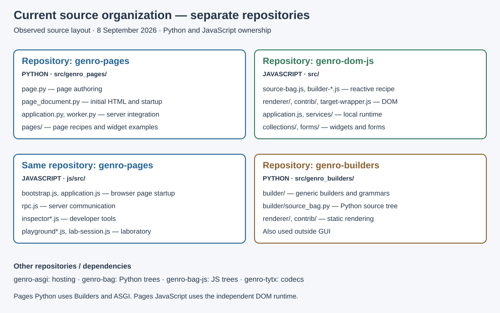
The two blue boxes belong to the same genro-pages repository. Python creates the page recipe and initial document; the JavaScript integration starts the browser page and connects it to the server. genro-dom-js owns the generic client runtime. genro-builders owns generic Python construction and static rendering.
genro-pages/
src/genro_pages/ Python page authoring and server integration
pages/ Concrete recipes and widget examples
js/src/ JavaScript page startup, RPC and developer tools
tests/ Python tests and Python-to-JavaScript consumers
js/tests/ Focused JavaScript service tests
genro-dom-js/
src/ JavaScript GUI engine
renderer/ Recipe rendering
contrib/html/ HTML dialect
contrib/svg/ SVG dialect
collections/ Widgets and containers
forms/ Form controller, fields and validation
services/ Recipe actions and topics
tests/ Standalone JavaScript runtime tests
genro-builders/
src/genro_builders/ Generic Python builder library
builder/ Grammars, construction and SourceBag
renderer/ Static rendering
contrib/ Specialized dialects
Active Pages checkout: /Users/gporcari/Sviluppo/genro_ng/meta-genro-modules/sub-projects/genro-pages.
The development overrides used during this work locate DOM and Builders under
/Users/gporcari/Documents/ChatGPT/genro-pages/worktrees/genro-dom-js and
/Users/gporcari/Documents/ChatGPT/genro-pages/worktrees/genro-builders.
These locations are development checkouts, not a proposed package layout.
temp/client-* and installed node_modules are assemblies/dependencies; they
are not additional repositories owning the GUI source.
Proposed: one genro-gui repository
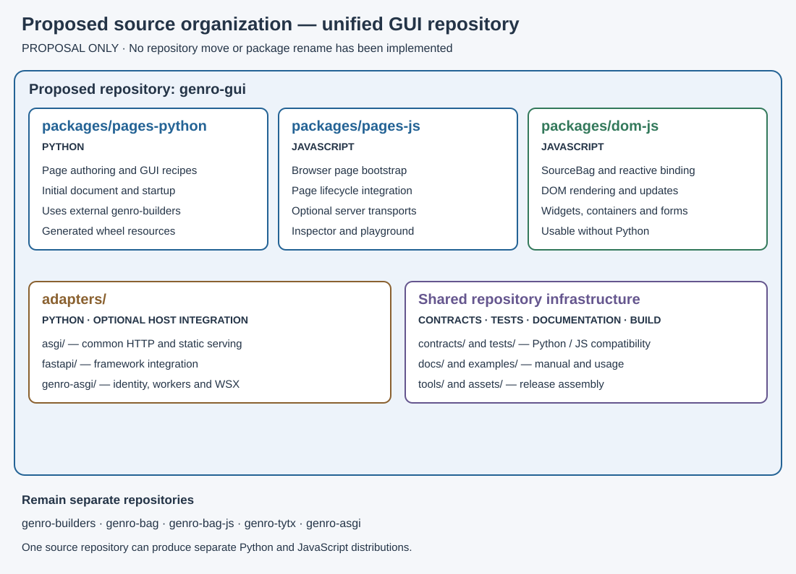
Directory and package names are provisional. Co-location supports changes to Python and JavaScript contracts in one review while preserving the independent DOM runtime and optional host integration.
genro-gui/ Proposed repository
packages/
pages-python/ Python page authoring, document, GUI recipes
src/genro_pages/
pages-js/ JavaScript page integration
src/
transports/ Optional host transports
devtools/ Inspector and playground
dom-js/ Independent JavaScript GUI runtime
src/
renderer/
contrib/
collections/
forms/
services/
adapters/ Python integration with chosen hosts
asgi/
fastapi/
genro-asgi/
contracts/ Startup and recipe compatibility
tests/ Python, JS, integration, browser, packaging
assets/ Shared authored styles and manifest schema
tools/ Asset builds and coordinated releases
examples/
docs/manual/
dist/ Generated distributions
The form directories shown here carry the responsibility now present in DOM's source; this does not change their verification status recorded in the concurrent work addendum. A WSGI adapter remains conditional on a concrete consumer.
Where the existing sources would go
| Current owner / source | Proposed destination | Responsibility |
|---|---|---|
Pages page.py, portable document code and GUI recipes |
packages/pages-python/ |
Python GUI authoring and startup description |
Pages bootstrap.js, application.js |
packages/pages-js/src/ |
Browser page startup and lifecycle |
Pages rpc.js |
packages/pages-js/src/transports/ |
Transport integration, separating host-specific behavior |
| Pages inspector and playground JavaScript | packages/pages-js/src/devtools/ |
Development tools |
DOM src/ |
packages/dom-js/src/ |
Independent rendering, bindings, widgets and forms |
| Pages server application, worker and configuration | Portable parts in core; host-specific parts in adapters/genro-asgi/ |
Requires decomposition, not a blind file move |
| Generic Builders implementation | External genro-builders repository |
Reusable construction and rendering |
| Bag Python, Bag JS, TYTX and Genro ASGI | Their existing repositories | Data structures, codecs and hosting |
Source repositories versus distributions
The proposed repository would contain multiple maintained source packages.
A Python wheel would include generated compatible browser assets; a standalone
JavaScript DOM distribution would remain independently usable. Generated resources
must come from the authored JavaScript sources, not a second manually maintained
copy. Publishing pages-js separately remains an open decision.
See the full proposal for host contracts, packaging and migration conditions, and the source atlas for individual files.
1. Current architecture and dependency boundaries
Version: 0.1 · 2026-09-08 · 🔴 DA REVISIONARE.
Snapshot boundary: Chapters 1–4 describe the client assembly C tested during this analysis. The authoritative DOM worktree changed concurrently: new form/validation code is described in the closing addendum. Claims of absence apply to the tested C runtime, not to that later unverified work.
In this chapter
- 1.1 Observed checkouts
- 1.2 What runs where
- 1.3 Dependency graph
- 1.4 Runtime and host ownership
- 1.5 Project status versus proposals
1.1 Observed checkouts
| Repository | Branch | HEAD | Relevant local state |
|---|---|---|---|
| Pages | codex/hello-world |
25a8f9bfb3398eca85c0127ecef8733935dbf7a5 |
Inspector editor/CSS, labels, null input and slider contracts, CodeMirror integration, document/dependency updates; full list in manifest |
| DOM JS | codex/python-js-alignment |
eaaa0ac0a582cc8f9abada1cdddf699cd0e66bbc |
Label, HTML-attribute, null-state and recipe-default helpers; identity/reconciliation and collection changes; new tests/examples |
| Builders | codex/sourcebag-tytx |
c6e4684914db4f3fd72c8f53b39ca270bfb6d89e |
Modified builder exports and SourceBag; untracked tests/test_source_tytx.py |
| Legacy | develop |
919a3a572acf89b4e016b2b32fd5ec556a269533 |
Untracked test/application artifacts; used only for targeted source comparison |
At the initial comparison, the observed DOM src/ tree matched C's genro-dom-js/src/ byte-for-byte (diff -qr returned no differences). The closing comparison no longer matched because another task was implementing forms. This initial equality is point-in-time: C is a copy, not a live link to D. Editing D does not refresh the running assembly. Record and compare again after any other task changes DOM.
Pages has no installed genro-pages distribution metadata in this environment; Python imports its src/ through PYTHONPATH. pyproject.toml declares version 0.1.0. Do not report a successful source import as proof of an installed wheel.
1.2 What runs where
The first response is a server-generated HTML bootstrap document, with import map, typed startup configuration, menu and empty page host. It is rendered by Python PageDocument, not by the browser page renderer. The subsequent /main response is a recipe, not page HTML. Both use Builders, but for different outputs. Distinguishing the two prevents accidentally moving reactive page rendering to the server when editing the shell.
WebPage.main(root) receives a Python SourceBag. A native JS builder receives a Proxy-wrapped JavaScript SourceBag in main(root). After import, both paths render through the JavaScript builder/handler/renderer/target pipeline. Python methods, closures, imports and server objects do not accompany the recipe.
The present CLI uses Genro ASGI's SPA worker infrastructure. Standalone DOM Application requires neither ASGI nor Python. The current Python distribution declares ASGI as a required dependency; that packaging choice must not be mistaken for a fundamental requirement of a client-only GUI.
1.3 Dependency graph
The dotted final edge denotes independence, not a runtime import. DOM owns the rendering mechanics; Pages adds page identity and RPC. No DOM import points back to Pages. Bag and TYTX are reusable data and serialization libraries; GUI consumers must not own their general semantics.
| Dependency | Observed runtime source/version | Required for |
|---|---|---|
| Python | .venv/bin/python, 3.12.9 |
Current Pages execution; metadata allows >=3.11 |
| Builders | Metadata 0.23.2, actual B source override | Python recipes and HTML shell; local SourceBag changes matter |
| Bag Python | 0.21.1, P .venv/lib/python3.12/site-packages/genro_bag |
Ordered typed trees |
| TYTX Python | 0.15.0, same site-packages | Typed recipe and startup encoding; MessagePack extra declared |
| Genro ASGI | 0.43.1, same site-packages | Existing HTTP/WSX host, worker registry, cookie identity |
| Bag JS | Git artifact v0.4.0, faf6bef3badb389d25ea4cb3b35c5369cb7ffd8a |
Browser trees/notifications |
| TYTX JS | Git artifact v0.15.0, 6b9bf3a486014d92812caa3b06674083e646c5cd |
Browser decode/encode and class registration |
| DOM JS | C copy matching dirty D; package version 0.1.0 | Builders, reactivity, DOM, collections |
| jsdom | 27.0.1 in C | Node test DOM, not a browser runtime requirement |
| Node | v23.11.0 observed | Tests and developer tooling, not page viewing |
| CodeMirror/highlight.js | Versioned CDN ESM/CSS referenced by Pages | Optional laboratory editing/highlighting, not fundamental Bag reactivity |
Installed Bag/TYTX JS reside in C's node_modules; C exposes genro-bag-js and genro-tytx through links. A MessagePack link makes genro-tytx/js/node_modules/@msgpack/msgpack/dist.esm visible to the current asset host. Raw browser import maps also map #uuid to Bag's browser-uuid.js; Node handles the conditional package import through its resolver. Forgetting this difference causes browser-only import failures.
Do not upgrade Bag Python beyond the declared <0.22 bound independently: the observed host line imports DataChangeCollector, whose removal is documented in the consolidation audit. This manual records the installed combination; it does not assert that no newer compatible release exists today or authorize upgrades.
1.4 Runtime and host ownership
A DOM Application owns its BuilderHandler, one mount target, delegated input/command listeners and topic service. The handler owns a rooted Bag containing _ for shared data and one segment per builder name. In the usual page, main is that segment. app.data exposes the root; app.builder.data exposes its segment. The latter is a real branch of the former, not a copied secondary datastore.
A Pages PageApplication adds pageId and rpc. DeveloperTools is attached on demand as app.dev; the inspector and playground have their own child Applications and explicit disposers. Their separate data contexts prevent laboratory control values from colliding with the experiment.
The server application's registry maps page names to recipe classes. A worker-backed document request creates a registered page identity under a connection. A subsequent recipe request constructs a fresh page-class instance and builder. Do not assume that WebPage itself is a long-lived resident object preserving instance fields between RPCs. Worker registration and recipe object lifetime are separate mechanisms in this slice.
1.5 Project status versus proposals
There is no active unfinished plan.md at .phased/ root in the observed tree. Completed slices are archived under done/runtime-contract, done/page-owned-runtime, done/python-page-bootstrap and done/registered-page-startup. .phased/roadmap.md retains outstanding work: broader lifecycle, resources, selective loading, production bundling, nested pages, recipe compatibility, authentication/forms, data integration and mobile verification. A completed registered-startup slice does not complete these larger areas.
The roadmap already records an approved distribution boundary: Pages owns Python/server and browser integration, DOM stays Python/ASGI-independent, the wheel should eventually contain compatible client artifacts. Complete dependency bundling and clean-wheel launch remain unverified future work. Part II's unification would change repository organization and requires a new decision; no rename is implied by that existing boundary.
The label/form review in P temp/labeled-box-validation-form-review-20260908.md is a proposal. Current code has shared internal widget labels, input null handling, limited native validity and typed inspector editing. It does not contain the proposed general labledBox wrapper API, shared validate_* engine or portable form controller. Those distinctions recur in Chapters 3–6 because they affect maintenance choices.
2. Source atlas
Contents · Previous: architecture · Next: runtime
Version: 0.1 · 2026-09-08 · 🔴 DA REVISIONARE.
Snapshot boundary: Chapters 1–4 describe the client assembly C tested during this analysis. The authoritative DOM worktree changed concurrently: new form/validation code is described in the closing addendum. Claims of absence apply to the tested C runtime, not to that later unverified work.
Paths use the root keys from the main manual. Every maintained Python/JS/CSS source and test in P and D has a direct file link in the symbol index. This chapter explains their relationships, rather than treating an import listing as architecture. Tests below are relative to the repository owning the source unless prefixed otherwise.
In this chapter
- 2.1 Python recipe and hosting layer
- 2.2 Browser page integration
- 2.3 DOM kernel
- 2.4 Collections and dependency modules
- 2.5 Source, generated data and distribution
2.1 Python recipe and hosting layer
| File / primary symbols | Responsibility and callers | State and lifetime | Tests / when to intervene |
|---|---|---|---|
P src/genro_pages/page.py: WebPage.main, client_builder, client_setup, source_inspection |
Host-independent page authoring descriptor; consumed by WebpageApplication |
Class configuration; fresh instance for recipe construction | test_hello_world.py, test_page_bootstrap.py; authoring contract or client descriptor |
P application.py: WebpageApplication.index, get_main, get_menu, get_inspector, get_registered_page, __call__ |
Route selection, recipe serialization, shell generation, registered identity checks, asset serving | Application lifetime: page registry, menu class, module roots, worker reference | test_hello_world.py, test_registered_page.py; wrong route, identity, assets or transport |
P page_document.py: PageDocument.main, build_head, build_body, build_menu, get_script_json |
Python-rendered initial HTML; invoked by index |
Startup Bag/menu for one response | test_page_bootstrap.py; import map, startup escaping, menu links, resource order |
P menu.py: MenuElements, MenuBuilder |
Static grammar with branch and webpage; DemoMenu populates it |
Recipe tree; validation cross-checks page registry | test_hello_world.py, test_widget_pages.py; navigation vocabulary |
P demo.py: DemoMenu, DemoApplication |
Concrete registration and collection menu, not generic GUI kernel | Registered page class map | test_widget_pages.py; add a demo destination |
P worker.py: PageWorker, PageServer.run_sync |
Adapter to SpaWorker; build one hosted demo per worker, delegate sync calls to worker pool |
Worker process and request context | test_registered_server.py; concurrency or host-version adaptation |
P server_configuration.py: PageConfiguration.main |
Builds Genro ASGI orchestration configuration and string worker-entry paths | Configuration instance and state directory | test_registered_page.py, test_registered_server.py; host imports or launch topology |
P __main__.py: Cli.run |
CLI options and server launch | Process entry only | Registered-server test; launch parameters |
P hello_world.py: HelloWorldPage |
Compatibility host entry for original single-page experiment | Inherits the application host; delegates recipe to pages.hello_world |
test_hello_world.py; preserve old import independently of new page class |
P widget_test_builder.py: WidgetTestBuilder element methods |
Python declarations matching experimental client collection grammar, including data alias |
Grammar/class, SourceBag per recipe | test_data_recipe.py, widget integration tests; new Python-visible widget/tag |
P widget_test_page.py: WidgetTestPage.main |
Discover test_* methods, isolate datapaths, show Live/Python tabs using inspected method text |
Fresh recipe composition | test_widget_pages.py; demo isolation/source presentation |
P inspector.py: build_inspector and helpers |
Recipe for palette, tree views and editor templates | Tool recipe per request | test_inspector.py, test_inspector_editing.py; inspector UI structure |
Except for the first row, the short filenames in this table are under P/src/genro_pages/. pages/hello_world.py and pages/about.py provide small HTML recipes; pages/playground.py composes the laboratory using PlaygroundBuilder and client setup. pages/widgets/*.py contains individual cases for inputs, box/panel/border/tab/stack, palette, tree and clipboard. pages/widgets/__init__.py exposes WIDGET_PAGES. These files are executable usage documentation; they are not collected pytest tests merely because methods begin with test_.
get_main invokes page_class().main(builder.source) directly. It does not call Python builder.create() or render the page recipe. That matters for data elements: the client must receive and execute them, not receive only Python's computed HTML. In contrast PageDocument.create() and .render(...) intentionally execute Python's static HTML path.
The current host is tightly tied to a root mount. WebpageApplication.__init__ rejects a nonempty mount, and generated URLs start at /. Changing just that guard cannot provide prefix support: document links, client imports, main/inspector endpoints and WSX URL construction all participate.
2.2 Browser page integration
P js/src/ module / symbols |
Called by and responsibility | Owned state / cleanup | Evidence / intervention |
|---|---|---|---|
bootstrap.js: renderPage |
Module entry from HTML; decode startup, create runtime, channel, source, builder, tools, setup | Module generation ticket; replaces old root and disposes old app | test_page_bootstrap.py, test_registered_channel.py; stale load or startup ordering |
application.js: PageApplication |
Bootstrap subclass of D Application |
pageId, RpcService; dispose RPC before DOM runtime |
Registered-channel/disposal tests; transport ownership |
rpc.js: RpcService |
PageApplication exposes remoteCall/openChannel |
Correlation map, timers, HTTP controllers, WebSocket and opening promise; explicit dispose | js/tests/rpc.test.mjs, registered-channel/server tests; timeouts or cross-call replies |
gallery.js: GalleryBuilder |
Dynamic builder selected by widget pages | Class grammar; eagerly imported collections | Widget Pages integration; collection availability |
playground-page.js: PlaygroundBuilder |
Python playground client descriptor | Extends gallery with labEditors |
test_playground.py; editor grammar |
playground.js: mountPlayground |
client_setup hook |
UI event removers and owned LabSession; stop nested input propagation |
test_playground.py, test_runtime_consumers.py; controls vs experiment isolation |
lab-session.js: LabSession.reset/run/dispose |
Playground execution engine | Independent app, data/source subscriptions; rebuild disposes and recreates | Playground/runtime consumer tests; Apply vs Rebuild semantics |
dev.js: DeveloperTools.dispose |
Inspector/playground mount functions | Owns child tools, not a second global runtime | test_runtime_consumers.py; recursive cleanup |
inspector.js: mountInspector |
Bootstrap after page mount | Tool app, shortcut registry, live references to page Bags, subscriptions, editor disposers | Inspector/editing/disposal tests; avoid reparenting inspected Bags |
inspector-editor.js: InspectorEditor.apply/refresh/reload/getParsed |
Inspector selection and Apply action | Selected node identity, value/attribute snapshot, draft dirty state; listener disposal | test_inspector_editing.py; conflict, type parsing, rollback |
shortcuts.js: Shortcuts.register/execute/dispose |
Inspector | Document listener and named command map | test_runtime_consumers.py; modifier, editing, repeat or IME behavior |
codemirror-component.js: registered CodeMirrorElement |
PlaygroundBuilder collection |
Editor instance, fallback textarea, async generation; destroy/disconnect | test_codemirror_labels.py, playground tests; async resource and focus behavior |
bag-xml-view.js: bagXmlView |
Playground diagnostic callback | Derived text only | Playground tests; readable typed Bag display |
recipe-highlight.js: highlightRecipes |
Bootstrap after mount | Optional asynchronous highlighter work | test_widget_pages.py; literal source display |
module.js, xmldom.js |
Browser import-map shims for dependency expectations | Adapter exports, not page state | Bootstrap/transport tests; raw ESM dependency compatibility |
shell.css, theme.css, inspector.css |
Document or tool stylesheet loading | Document/shadow styling | Browser review plus widget tests; cascade and compact layout |
The inspector references page.builder.data and page.builder.source as store properties on its trees. Putting those Bags under the inspector's own Data tree would change their parent/backref ownership and is therefore not equivalent. The UI's selected paths belong to the inspector's data; the edited nodes belong to the inspected page.
LabSession.run is intentionally a local developer console implemented with new Function. It receives root, data, source, builder, app and Bag. It is trusted author code with normal browser privileges; it is not a sandbox for untrusted recipes. Apply mutates existing Bags and retains changes made before an exception. Rebuild creates a new Application. These are different operations, not two ways of applying a transactional diff.
2.3 DOM kernel
D src/ module / symbols |
Responsibility, callers and dependencies | State / lifetime | Tests / intervention |
|---|---|---|---|
index.js |
Package exports for SourceBag, builders, handler, targets, renderers, Application, grammar and collection helpers | Import boundary | embryo.test.js, consumers; public export stability |
source-bag.js: SourceBag, SourceBagNode, wrapSource |
Bag subclasses, TYTX XS registration, fluent Proxy, runtime attributes and path methods; called by builder/renderer/actions |
Node builder pointer, target ID, root handler link | abs-datapath.test.js, imported-source.test.js; path, type or authoring dispatch |
builder-base.js: BuilderBase |
Schema resolution, setChild, loadSource/create, runtimeValues, data logic, source events, render patch generation |
Source root, handler/data references, target serials, imported recipe, writeback maps, defaults | Structural/import/component/reactive-logic tests; grammar or patch generation |
builder-handler.js: BuilderHandler, private RowContext |
Own data root; activation, pointer map, data events, batching, formula cascade, row rule dispatch, patch optimization | Subscriptions, queues, dedup sets, component/shared rules, removed IDs | reactive-logic, component-rules, per-row-patches, structural; scheduling or missed update |
renderer/base.js: RendererBase |
Recursive walk; meta handling; component expansion; dialect dispatch; fragment finalization | Per-renderer cache, expansion bookkeeping | component.test.js, container.test.js, svg.test.js; mixed dialect or expansion shape |
contrib/html/html-builder.js: HtmlBuilder, HtmlRenderer |
HTML grammar and DOM element creation; attributes, target identities, pointer hooks and store property | Render-time element construction | embryo, writeback, explicit-dom-id; DOM projection |
contrib/html/html-attributes.js: HtmlAttributes |
CSS-root and dialect attribute adaptation reused by labels | Dialect value; no datastore | style-adapter.test.js, widget-labels.test.js; incorrect attribute/style routing |
contrib/html/html5-elements.js |
Static grammar data consumed by defineGrammar |
Class schema input | Embryo/import tests; HTML vocabulary |
contrib/svg/svg-builder.js: SvgBuilder, SvgRenderer; svg-elements.js |
SVG namespace renderer and grammar | Renderer per dialect | svg.test.js; namespace and SVG attributes |
target-wrapper.js: TargetWrapper, DomTarget |
Full replace, partial patch application and limited reconciliation; uses source target IDs | Caller-owned host plus WeakMap of recipe DOM snapshots | Structural/layout/labels/ID tests; focus, replacement, runtime style preservation |
application.js: Application |
Own handler/target/events; mount; delegated writeback and recipe commands | Listeners, disposed flag, builder; recursive dev cleanup | writeback, actions, deferred-mount; page API and input routing |
services/recipe-runtime.js: RecipeRuntime.run |
Evaluate action strings with fresh arguments and source-node this |
Application reference | actions.test.js; action scope/compiler boundary |
services/topics.js: TopicService |
Synchronous page topics and live source subscribe_* traversal |
Callback sets, unsubscribe handles and optional signals | actions.test.js, P runtime consumers; topic ownership |
recipe-defaults.js: RecipeDefaults |
Seed missing pointer targets once per source node | WeakSet of initialized nodes; builder reference | sliders-defaults.test.js; null/default overwrite |
collections.js |
Register collection metadata, merge grammar later, define custom elements and inject CSS | Module registry and CSS dedup set, shared within realm | widgets.test.js; unknown collections |
widget-label.js: WidgetLabel |
Stable internal label/content wrapper and decoration adaptation | Host/control/box references, MutationObserver, applied attribute map | widget-labels.test.js; label focus/style preservation |
input-null-state.js: InputNullState |
Represent null separately from native input values; keyboard gesture and pending blur commit | Null/pending flags and input-local listeners | input-null.test.js; null/empty/readonly/IME behavior |
pointer.js, utils.js |
Pointer parsing/scanning and Bag detection utilities | Stateless helpers | pointer.test.js; syntax helpers, not replacement for absDatapath |
The handler decides what needs a render; the builder decides which patches represent it; the renderer decides what DOM a source node means; the target decides how to apply the patch to existing DOM. Keep these responsibilities separate when debugging: a correct fragment cannot fix a missing notification, and an overbroad replacement cannot be fixed by changing the widget's label text.
The source header in several files still says components, symbolic paths or anti-echo are “not yet ported.” Actual methods and tests show those slices exist. Conversely, the presence of a grammar field such as formId or dataRpc does not prove a form controller or remote data provider exists.
2.4 Collections and dependency modules
D collections/inputs.js defines text/password/number/date/time inputs, checkbox, comboBox/filteringSelect and horizontal/vertical sliders. layout.js defines panel, box, borderContainer, tabContainer/tab, contentPane, stackContainer and stackButtons. colorpicker.js, storetree.js, palette.js, clipboard.js are separate collection modules. Their classes are mostly local to defineComponents; use collection registration as the extension boundary, not imports of private class names. Chapter 4 maps widget contracts and tests.
B builder/base.py and _grammar.py own Python schema-based construction; _decorators.py supplies element and composition decorators; source_bag.py owns builder-aware node/Bag behavior; _validators.py and grammar export utilities are distinct from browser input validation. Python renderer/base.py and contrib/html/html_builder.py implement static rendering, used for the document. Do not port the current Python static engine's removal of reactive queues into DOM accidentally: the browser engine has its own implemented reactive lifecycle.
C genro-bag-js/src/bag.js, bag-node.js and the ordered node-container implementation own traversal, values/attributes, insertion/deletion, backrefs and notification. Bag's TYTX methods encode tree/class metadata; C genro-tytx/js/src/index.js exposes codecs and registry exports. Python counterparts come from installed packages. GUI code should call these APIs instead of mutating node internals or reimplementing class hydration.
2.5 Source, generated data and distribution
- P
src/genro_pages, Pjs/src, Dsrc, Bsrcare source. The JS HTML grammar explicitly says it is generated from genro-builders and must not be edited by hand; regenerate it from its owner when changing that vocabulary. Grammar tables are runtime inputs, distinct from generated wheel assets. - P
temp/client-*trees are development assemblies/backups. C's DOM is a disposable copy of D. Cnode_modulesand lockfile record dependency installation, not new GUI ownership. - P
js/srcis force-included by Hatch into wheel pathgenro_pages/resources. The host chooses the source directory if present, otherwise this packaged resource directory. Do not maintain both by hand. - A wheel containing Pages JS is not yet a self-contained wheel containing all DOM/Bag/TYTX assets. Current construction still requires external client roots.
- P
tests/*.mjsare Node integration consumers invoked from pytest or loader commands; Pjs/tests/rpc.test.mjsis a focused service test. Dtests/*.test.jsis the standalone runtime suite.tests/dom.jscreates jsdom globals; it is test infrastructure. - P and D examples, docs and
temp/evidence are explanatory artifacts; they are not installed production entry points. The symbol index deliberately keeps tests separate by path.
3. Data model, runtime APIs and complete execution paths
Contents · Previous: atlas · Next: maintenance
Version: 0.1 · 2026-09-08 · 🔴 DA REVISIONARE.
Snapshot boundary: Chapters 1–4 describe the client assembly C tested during this analysis. The authoritative DOM worktree changed concurrently: new form/validation code is described in the closing addendum. Claims of absence apply to the tested C runtime, not to that later unverified work.
In this chapter
- 3.1 Four object models, four kinds of identity
- 3.2 Paths and bindings
- 3.3 Notifications and mutation discipline
- 3.4 Actual
genrosurface and legacy compatibility - 3.5 Bootstrap and Python-to-browser path
- 3.6 Native JavaScript path and convergence
- 3.7 Field edit → Bag → other readers
- 3.8 Programmatic Data → widget
- 3.9 Source attribute → rendering
- 3.10 Button → callback → page update
- 3.11 Source insertion/removal and resource lifetime
- 3.12 Components and asset loading
- 3.13 Communication with the current host
3.1 Four object models, four kinds of identity
A Bag is an ordered collection of labelled nodes. A node has a value, attributes and optional structural/type metadata; a value can itself be a Bag. getItem reads a value, getNode returns the node, and getAttr reads its metadata. A null value is not an absent node. Empty string, zero and false are not null. That distinction is fundamental to defaults, input editing and typed transport.
A SourceBag is a specialized Bag whose nodes understand builder grammar, bindings and runtime ownership. A nested SourceBag is source structure. An ordinary Bag stored in a source value or attribute can be application data and must remain ordinary data. Blindly converting every nested Bag to SourceBag destroys this distinction.
A widget is a JavaScript custom-element instance created for a source node. It can own UI-only state such as expanded tree paths, active dropdown, slider control or palette position. Its shadow DOM contains native controls and label structure. A DOM node is the renderer's output, and may be replaced without replacing its logical source node.
The arrow Data → Source means evaluation, not ownership. Data does not become a child of the source node merely because that node binds to it. The widget host belongs to the DOM target; the source belongs to the builder; the data belongs to the handler root.
There are several identities:
| Identity | Meaning | Stability |
|---|---|---|
| Bag label/path | Address within a particular tree | Depends on structure and parent ownership |
node_id |
Author-specified source lookup anchor, used by nodeById and symbolic paths |
Recipe-level identity; not HTML id |
_targetId, such as n1 |
Runtime source-to-render bridge assigned by BuilderBase.targetId |
Retained on that source node; generated after hydration |
DOM id |
Author HTML identity or generated fallback | May change independently of target ID |
data-gnr-target-id |
Explicit DOM attribute carrying runtime identity | Used by patch lookup and writeback |
| Object identity | Actual SourceBagNode or widget object | Changes on recreation; retained only where reconciliation succeeds |
DomTarget._byId prefers data-gnr-target-id, then the fallback HTML ID, scoped to its own host. Two Applications can use the same generated serials because their targets are different. Expansion components add derived row/cell addressing and _writebackMap; do not decode those strings in application code.
3.2 Paths and bindings
For a builder named main, the handler's root is conceptually {_: Bag, main: Bag}. builder.data.setItem('record.name', 'Ada') and app.data.setItem('main.record.name', 'Ada') address the same node. A source node resolves paths through absDatapath before reading the handler root.
| Recipe pointer / path | Resolution in a node under datapath='record' |
|---|---|
^.name |
Reactive read of main.record.name |
=.name |
Passive read of the same value, without registering a reactive reader |
^name |
Reactive read of main.name; ignores the container's relative base |
^record.name |
main.record.name |
^other:record.name |
Explicit volume: other.record.name |
^record.name?caption |
Data-node attribute read at main.record.name?caption |
.child.#parent.name |
Relative composition followed by parent-segment cancellation |
#FORM.name |
Resolve nearest formId/form=true anchor, then its datapath |
#ANCHOR.name |
Resolve nearest node carrying _anchor |
#section.name |
Find source node_id='section', then resolve its relative path |
The root default is builder-relative, not automatically a globally shared path. The _ segment exists for shared data across builders in one handler; it is not server-synchronized data or a cross-window global.
Relative resolution climbs the node and ancestors while the path still starts with .. Absolute datapath terminates the relative chain; relative ancestor datapaths compose. Missing anchors or excess #parent cancellation throw. #FORM is implemented as a path anchor, not evidence of a form service. See D tests/abs-datapath.test.js for exact cases, including explicit volumes and failure branches.
runtimeValues(node) evaluates both ^ and = at render/action time. Only ^ registers a reader in handler.pointerMap. A passive parameter therefore sees the latest value when a button is clicked, but does not itself trigger a rerender when data changes. Both pointer forms can produce writeback hooks on writable attributes in the current renderer; “passive” describes subscription, not guaranteed read-only behavior.
Strings beginning with binding markers are interpreted as pointers. Literal source-code displays must avoid accidentally routing isolated ^ or = tokens through recipe interpretation. Pages highlighter/editor integrations keep displayed code as literal text.
3.3 Notifications and mutation discipline
Use Bag APIs and app.live(() => ...) for page changes. live is a synchronous batching boundary, not an asynchronous transaction and not a rollback mechanism. Nested calls share the outer flush; nested calls may not choose a new target. The callback's effects already applied to Bags remain if it throws. The finally path drains formulas and clears queue state.
Bag.setItem supports attributes, insertion position, update/replace attribute policy, null-attribute removal, origin reason and fired semantics. The runtime's positional call is deliberately explicit; avoid copying its long positional signature casually into recipes. Source helpers are easier to read:
app.live(() => {
const node = app.builder.nodeById('editor');
node.SET('.name', 'Ada');
const current = node.GET('.name');
node.PUT('.scratch', current); // silent write
node.FIRE('.changed'); // notify, then reset
});
This illustrates existing method APIs. SET .name = 'Ada' as text is different syntax and is not compiled by the new RecipeRuntime.
Bag backrefs let nested changes propagate to root subscribers with event metadata including node, event kind and path list. BuilderHandler.activate subscribes after initial render. _onDataEvent reconstructs the changed path, finds matching readers (exact, ancestor or descendant relationship), runs row/page data logic, and queues view patches. Source changes use a separate root subscription through BuilderBase._onSourceEvent.
PUT uses a false reason for silent mutation. FIRE passes the fired flag, causing event delivery followed by null reset in the Bag implementation. Consumers must read the delivered event value at notification time; a later ordinary read can already be null. Neither operation is a server push by itself.
Data formulas queue and deduplicate within a live batch; controllers run synchronously. _drainFormulas limits repeated execution to 50 per key per flush and reports livelock. Formula execution is not simply another DOM rendering pass. Inspect controller writes when a rendering symptom is actually a data cascade.
3.4 Actual genro surface and legacy compatibility
The current bootstrap assigns the main PageApplication to window.genro and its builder to window.page. Standalone DOM creates no necessary global; callers can keep the returned Application locally.
| Surface | Current behavior | Compatibility boundary |
|---|---|---|
data, builder, root, handler, target |
Expose data root, mounted builder, grammar Proxy, coordinator and target | New explicit ownership surface, not all legacy genro.src methods |
mountBuilder(builder) |
One deferred mount; rejects second mount or disposed runtime | Used after source fetch and hydration |
live(fn), render(), mutate(id,value) |
Batch changes, full render, identity-based input mutation | Synchronous callback scope; no transaction rollback |
publish(topic,payload), subscribe(topic,callback,{signal}) |
Synchronous page-local topics; subscribe returns an unsubscribe function | No full node-prefixed legacy publish/subscribe implementation |
events |
TopicService instance |
Internal service vocabulary; not a legacy global bus |
dev |
Added when tools mount; owns inspector/playground | Optional, not a complete legacy dev service |
rpc |
Pages-only RpcService; Promise-based WSK/GET/POST |
Standalone DOM has no RPC; correlation is not dataProvider support |
pageId |
Pages-only server identity | Absent/null for unregistered path |
dispose() |
Idempotent page cleanup | No full server page-close/freeze/resume lifecycle |
Source GET/SET/PUT/FIRE, relative-data helpers |
Methods with source path resolution | Partial legacy compatibility; signatures differ |
Source action this |
Real source node through ordinary function .call(node, ...) |
Does not mean every widget/internal callback has source scope |
src, dom, wdg, dlg, vld, wsk, frm legacy services |
No corresponding complete service surface in current Application | Do not invent facades or call legacy-only APIs |
dojo.connect, FIRE_AFTER, string PUBLISH macros, full provider language |
Not implemented as general compatibility APIs | Future work |
RecipeRuntime.run obtains fresh runtime attributes, merges event extras, injects genro and sourceNode, filters parameter names and creates an ordinary Function. It calls that function with the source node as this, inside app.live. This supports action strings such as this.SET('.result', message). It does not tokenize or expand legacy statements, and it is not an evaluator safe for untrusted text. Native arrow functions retain lexical this; rebinding cannot change that.
Data-element functions follow another convention. _resolveLogicFunc accepts a callable, a bare identifier resolved on data-logic source classes, or a non-identifier code string handled by compileFunc. A formula receives a bindings object and returns its result. A controller receives (node, bindings). Neither is automatically the source-scoped action function. This distinction is important when a ported callback reads this unexpectedly.
Legacy comparison was checked in L gnrlang.js (macroExpand_GET/SET/PUT/FIRE/FIRE_AFTER), gnrdomsource.js (getRelativeData, setRelativeData, currentAttributes, buildLblWrapper), genro.js (genroInit) and gnrbag.js (fireItem). The old macro expansion and broad runtime services explain desired semantics, but those implementations are not loaded by the new runtime.
3.5 Bootstrap and Python-to-browser path
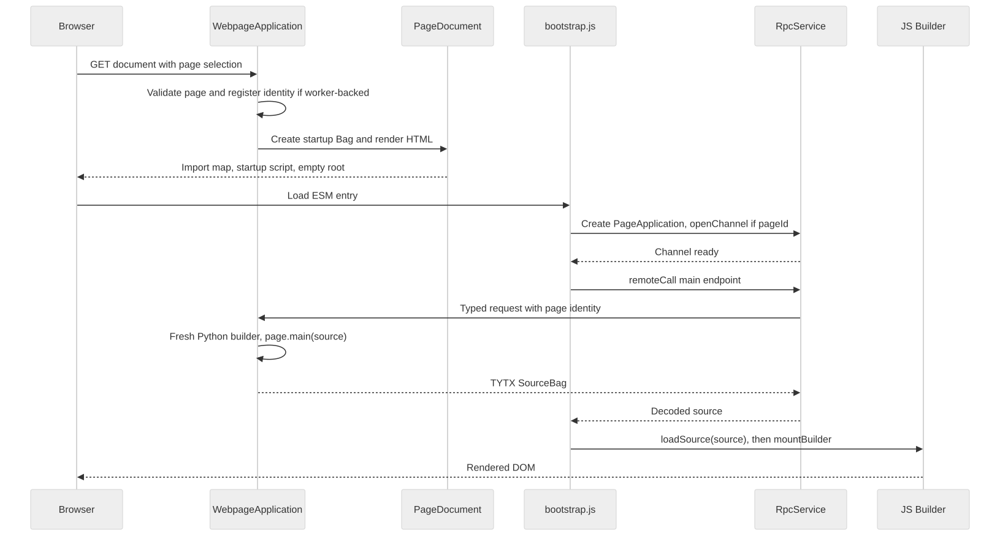
P/application.py:indexvalidates transport and page selection, builds startup with endpoints/host IDs/client descriptors and optionally registerspage_idthrough the worker.PageDocumentrenders HTML.get_script_jsonescapes<,>and&for raw script embedding without changing decoded startup values. That boundary is distinct from TYTX escaping.bootstrap.jsdecodes startup and begins a generation. It disposes the prior global app, clones/replaces the root, createsPageApplication, then waits forrpc.openChannel()whenever a page ID exists. This channel opening currently happens even if the configured default RPC method is GET or POST.RpcService.remoteCallrequests/main. Unregistered pages explicitly use GET. The host selects a source builder (page override or Python HtmlBuilder), invokesmain, and serializes the source withto_tytx.- JS imports the selected builder module, calls
loadSource, then mounts.loadSourcemust precede mounting.createresolves collections/components, copies the imported source into owned nodes, initializes defaults and executes startup data elements. The handler renders then activates data observation. - Bootstrap fetches and mounts the inspector, optionally invokes
client_setup, starts highlighting and fills the diagnostic XML source view. The inspector is fetched in this bootstrap path even when the source-inspection panel is hidden; hiding inspection is not a network/service capability switch.
Errors include 400 for unsupported transport, 404 for unknown page, 403 for identity mismatch, import/codec errors, unknown source tags, unsupported imported resolvers and mount failures. renderPage disposes on current-generation failure and reports a visible load error. Generation checks suppress stale asynchronous results. They are bootstrap guards, not a universal cancellation mechanism for every application callback.
Evidence: P test_hello_world.py performs actual Python → ASGI response → Node decode → jsdom render for JSON and MessagePack; test_typed_envelope.py checks typed source/data and binary round trips; test_page_bootstrap.py checks document/startup; test_registered_server.py launches the real worker and socket path.
3.6 Native JavaScript path and convergence
A native builder extends HtmlBuilder or GalleryBuilder, implements main(root), and is passed to new Application(host, builder). BuilderHandler.addBuilder establishes its data segment and handler ownership before create. setup(data) can seed data and declare collections, then grammar is resolved, then main authors nodes. Collection modules must already have been imported.
The actual laboratory example is P/js/src/lab-session.js:INITIAL_CODE:
data.setItem('demo.title', 'Hello Genro');
const pane = root.div({datapath: 'demo'});
pane.h2('^.title');
pane.textBox({value: '^.title', lbl: 'Title'});
Here data is builder.data, not app.data. The laboratory mounts an empty GalleryBuilder and executes this snippet within app.live. An ordinary JS page would put equivalent recipe statements in its main method and initial data in setup or a supported data declaration.
The paths converge at owned SourceBag, runtimeValues, renderers and handler events. Differences remain: Python syntax/grammar, type codecs, class registration and imported-source validation; JS can refer to local functions/components unavailable across the wire. Import copies labels, tags, XML tags and attributes while reconstructing _builder, _handler and target identities. A typed ordinary Bag value stays data. Legacy plain Bag import uses a compatibility interpretation of nested branches; it is not equivalent to a fully typed XS recipe.
3.7 Field edit → Bag → other readers
The HTML renderer emits pointer hooks and data-gnr-target-id. Input handling listens on the application root, so shadow controls dispatch composed, bubbling events from their host. _enableInput resolves the source node by internal target identity, chooses checked or value, and respects updateOn: default blur policy listens to native change, while updateOn='input' listens continuously. Sliders also interpret intermediateChanges.
_mutationWrite derives the destination from source attributes. It does not accept an arbitrary data path from an input field. Widget accessors already return booleans/numbers/null where supported. Generic _typedValue is limited and is not a complete dtype decoder.
_applyMutation writes inside live with the source node as reason. _onDataEvent skips that same node when queuing view updates. This anti-echo avoids replacing the editor that just wrote. Other bound nodes still update. DomTarget._recordValue advances its remembered recipe state after the skipped origin render.
For example, editing the title in Hello World updates main.title and the ^title display. Editing a labelled textBox in the laboratory writes main.demo.title. The field and heading may share one data value but remain two source nodes. Evidence: D writeback.test.js, P test_widget_pages.py, test_input_null.py and test_data_recipe.py.
3.8 Programmatic Data → widget
app.live(() => app.builder.data.setItem('demo.title', 'Updated'));
// Equivalent root address:
app.live(() => app.data.setItem('main.demo.title', 'Updated'));
This triggers the same handler path without a widget-origin reason, so the input itself is eligible for update. Do not skip it as if every write were a self-echo. renderNodes produces replacements or finer expansion patches; DomTarget.partial reconciles where its contract allows, otherwise replaces. External changes can therefore legitimately replace a focused leaf; complete focus preservation for arbitrary updates is not guaranteed.
A storeTree is an exception in ownership: its store Bag is passed as a property and it subscribes directly. General data-widget readers are excluded from normal pointer registration, while label/box decorations remain registered. This preserves internal expansion state across store notifications but means replacing a store branch needs separate attention; do not assume scalar binding machinery automatically handles every data-widget lifecycle.
3.9 Source attribute → rendering
const node = app.builder.nodeById('title_echo');
app.live(() => node.setAttr({font_size: '20px'}));
The source root observes the attribute event. _onUpdAttrs unregisters old reactive pointers carried by changed attributes; _onSourceEvent queues a source update. Rendering reevaluates attributes, adapts CSS and creates prospective output. The target patches matching containers/decoration changes or replaces other nodes.
Changing node.attr directly bypasses notification. Deleting an attribute requires an API that emits its removal; the inspector uses setAttr(attrs, true, false, false) for a notifying replacement of the complete attribute dictionary. Its comment explicitly notes delAttr does not emit the required event in this path. Use the installed Bag signature, not an old package's positional assumptions.
Path-affecting source changes deserve focused tests: they can invalidate descendants' pointer registrations as well as the changed node. Inspect _onUpdAttrs, _updatePointerMap and structural tests before claiming a full inherited-datapath rebinding contract. In particular the current map registers absolute read paths while unregister code also handles attribute-qualified keys; exhaustive attribute-pointer rebinding is an audit item, not guaranteed by a broad green suite.
3.10 Button → callback → page update
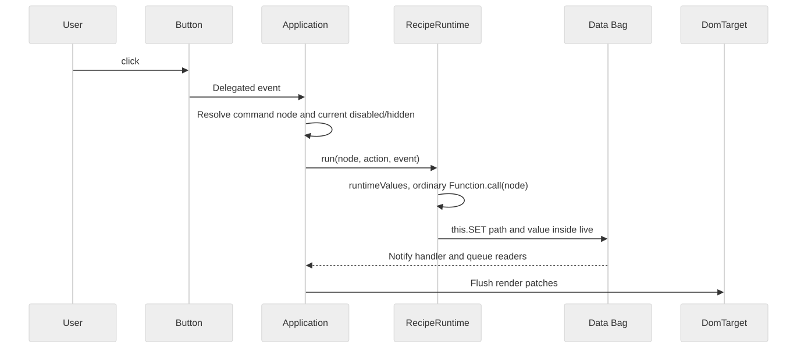
Only buttons carrying data-command-node enter this route. Runtime attributes are read again at click time, so passive action parameters are fresh and disabled/hidden guards are effective. If both action and publish exist, action wins; publish is the else path. This is tested in D actions.test.js and differs from claiming full legacy action/fire/publish ordering.
A publish-only button emits payload true. TopicService.publish calls registered callbacks, then finds live source nodes with subscribe_<topic> and executes those strings with payload and _kwargs. There is no automatic node prefix. A removed source node is absent on later traversals, but this does not establish universal node-owned cancellation for arbitrary timers/Promises. Exceptions from action code are not wrapped in the bootstrap error UI; callers adding custom commands must own their error reporting.
3.11 Source insertion/removal and resource lifetime
app.live(() => {
app.builder.nodeById('list').li('New row');
});
const child = app.builder.source.getNode('body_0.ul_0.li_0');
app.live(() => child.parentBag.popNode(child.label));
This corresponds to the list shape in D structural.test.js; use the actual source path for another page. Insertion creates a node, applies one-time defaults and queues an insert with parent and before-anchor. Deletion unregisters subtree pointers, captures the target ID before attachment information disappears, and queues a remove. The optimizer nets an insert/delete in one batch, covers descendant updates when an ancestor is already replaced, and coalesces dense row/cell updates. The structural suite compares patched DOM with a fresh render.
DOM removal triggers Web Component disconnectedCallback, which is responsible for widget-local observers, subscriptions, timers and async generation guards. This ownership is imperfect in the current storeTree: the reproduced missing unsubscribe-options defect in Chapter 4 leaves a Bag callback active after disposal. Whole-page disposal first marks the target disposed, removes delegated listeners, disposes tools/topics/handler, and removes runtime-owned children while retaining the caller's host and the Bag data. Handler disposal clears root subscriptions, builder subscriptions, pointer maps, pending formulas and component rule registries. Pages disposes RPC first.
This is page-owned cleanup, not a complete source-node lifecycle service. There is no generic hook that automatically cancels every user-created async task when a subtree is removed. Each collection/tool must release its external resources explicitly. See P runtime disposal tests for idempotence, retained Bags, child tools and failed mount; D collection tests for disconnect behavior.
3.12 Components and asset loading
A collection ESM import calls registerCollection(name, spec). wc_requires or wcRequires(...) selects names; create merges grammar, calls idempotent defineComponents and optionally injects CSS. Requiring an unknown name throws. This is registry resolution, not a network loader: current GalleryBuilder imports all its collections eagerly.
Builder components are different from Web Components. static components registers render-time recipe expansion methods; static containers exposes author-time composition methods. RendererBase._renderComponent expands parameters, a single store record or each iterate row into a temporary source tree, requiring a single tree root per block. It records writeback and row/cell coordinates so later mutations can target expansions. Component rule templates execute against a RowContext for the current row; retaining a registration row's source node would resolve the wrong data.
The static source recipe holds a component invocation; its expansion nodes can be ephemeral. This is why a simple one-source-node/one-visible-element model does not describe every rendered row. D component, container, component-rules and per-row-patches tests cover this area. Lazy iteration and a complete source-subtree resource loader are not established.
Asset delivery is P WebpageApplication.__call__ under /_assets/<root>/..., allowing JS/MJS/CSS files within resolved approved roots and GET/HEAD only. Python source and arbitrary filesystem files are not served through that branch. CodeMirror imports pinned CDN modules asynchronously, retains a textarea on failure and guards late completion by generation/isConnected. Highlighter loading is optional. No production hashed manifest or complete page js_requires/css_requires/py_requires system is implemented.
3.13 Communication with the current host
RpcService supports WSK and explicit GET/POST. WSK opens /_wsx, performs /_wsx/openchannel for the registered page, then sends WSX:// plus JSON metadata containing correlation id, method, path, page_id and a TYTX-encoded data field. Responses decode through TYTX, settle the matching promise once, and reject non-2xx status. Unsolicited IDs and expired replies are ignored; malformed outer protocol disposes the service. Timeouts remove pending calls; no reconnect/replay is implemented.
HTTP GET encodes each query value with TYTX; POST sends TYTX JSON with the corresponding media type. HTTP result decoding uses the requested JSON/MessagePack mode. WSK's outer envelope remains text/JSON and its decoded result is typed; selecting MessagePack for a recipe does not mean the browser connection switched to raw binary WebSocket frames.
Correlation protects call identity, not application-level “newest edit wins.” If application code starts two calls and writes each resolved result to one field, it still needs a generation/version policy. Disposal aborts HTTP work and rejects pending socket requests, but it does not roll back an already executed remote action.
Server get_registered_page checks channel/page-ID consistency, cookie connection, page ownership and request identity. P test_registered_server.py proves two pages under one cookie, channel opening, both recipe transports, GET/POST access and foreign-connection rejection. The generic browser root/nested-iframe transport bridge, server close notification, freeze/resume and a login lifecycle remain future work. DOM's gnr-set is an in-page widget command and is not a server authorization boundary.
4. Widgets, tools and practical maintenance
Contents · Previous: runtime · Next: proposed architecture
Version: 0.1 · 2026-09-08 · 🔴 DA REVISIONARE.
Snapshot boundary: Chapters 1–4 describe the client assembly C tested during this analysis. The authoritative DOM worktree changed concurrently: new form/validation code is described in the closing addendum. Claims of absence apply to the tested C runtime, not to that later unverified work.
In this chapter
- 4.1 Widget contract
- 4.2 Current collections
- 4.3 Labels, boxes and styles
- 4.4 Types, formatting, null and defaults
- 4.5 Validation, forms and inspector
- 4.6 Reproduced cleanup gap: storeTree
- 4.7 Where to intervene if…
- 4.8 Setup and tests: verified commands
- 4.9 Test layers and limits
4.1 Widget contract
A collection supplies grammar entries, custom-element registration and optional collection CSS. webcomponent(name, options) creates _meta.webcomponent and render_tag='gnr-...'. BuilderBase._resolveCollections incorporates these entries before a recipe is built or imported. Python's WidgetTestBuilder must also declare tags used in Python recipes. A JavaScript custom element alone does not make a Python tag available.
The renderer resolves attributes before handing them to the element. Most values become HTML attribute strings; true becomes presence, false/null/undefined are omitted. A widget must interpret presence and textual booleans consistently with its contract. Special paths keep richer values as properties: storeTree gets .storeBag, and null-aware inputs receive typed .value/.checked after attribute application. Do not serialize a Bag to [object Object] in an attribute.
A custom control writes through a composed bubbling event from its host. Standard value/checked controls use input or change; tree/layout commands can emit gnr-set with their resolved destination. Inside the Application, delegated input handling maps identity back to the source; it never infers a source node from the visual label. Widget-internal event handlers normally use widget scope. Source recipe actions use the separate recipe executor.
A disconnect must release external ownership: Bag subscriptions, document/window handlers, observers, timers and late async completions. Listeners attached only to a widget's own collectible input are a different lifetime concern from listeners stored on a retained external Bag. Reconnection should not double-subscribe or initialize a second editor over the first.
4.2 Current collections
| Collection / recipe tags | Implemented mechanism | Boundaries and tests |
|---|---|---|
inputs: textBox, passwordbox |
Shadow native text/password input, host value property, label support, null state, change/input bridge | No universal validation dispatcher; D widgets, writeback, input-null, widget-labels |
numberTextBox |
Native number input; valueAsNumber when nonempty, explicit empty string otherwise, null separately |
Full TYTX dtype coercion and general numeric formatting are absent; input-null |
dateTextBox, timeTextBox |
Native date/time controls through GnrInput | Accessors inherit string representation, not automatic Python date reconstruction; transport typing is separate |
checkbox |
Native checked state plus explicit null/indeterminate tracking | Null CSS currently overrides native checkbox appearance; conventional dash is still proposed; input-null, widgets |
comboBox, filteringSelect |
Dropdown/filtering, key/caption choices; constrained select rejects invalid choice while free combo allows text | Limited local validity/error presentation, not genro.vld; D choices.test.js |
horizontalSlider, verticalSlider |
Native range, typed numeric value, minimum/maximum or min/max, step/discreteValues; vertical variant | Bounds validation and intermediateChanges; no full legacy decoration/tick API; D sliders-defaults.test.js, P test_slider_defaults.py |
layout: panel, box |
Shadow container/slot and caption/layout styling | Generic box is not proposed legacy labledBox wrapper; layout-containers, widget-labels |
borderContainer |
Region layout and splitter interaction | Inspect pointer and disconnect handling; not all legacy/mobile semantics; layout-containers.test.js |
tabContainer, tab |
Child selection and visible tab content, selection writeback | Maintain live selected state across compatible patches; layout and label tests |
stackContainer, contentPane, stackButtons |
One selected content pane plus optional independent controls; selection/close/topic wiring | Separate selection source identity and tab UI; stack.test.js |
palette |
Floating panel, move/resize, close/open binding, optional keyboard handling | Keyboard movement opt-in, no complete dialog service; palette.test.js, labels tests |
storeTree |
One data-widget source node; direct Bag store, expansion/selection state; selectedPath writeback | No general remote lazy resolver/tree grid; disconnect subscription defect below; storetree.test.js |
colorpicker |
Native color control, shared labels and null state | Browser-native color behavior; no universal format service |
clipboard: copyButton |
Clipboard Promise, busy/status state, error handling, timer/generation cleanup | Capability/permission dependent; D clipboard.test.js |
P labEditors: codeMirror |
Versioned CDN editor or textarea fallback; value bridge and disconnect destroy | Development integration, not a required core widget; P CodeMirror/playground tests |
The Python gallery has one page per registered widget case. VerticalSlider is available in its grammar and covered by dedicated tests even though the gallery's historical file organization may not provide a separate vertical-slider page. Discover registered pages through WIDGET_PAGES, not by lowercasing class names or guessing URLs.
4.3 Labels, boxes and styles
WidgetLabel creates/reuses an internal .labledBox with label and content inside the widget's own shadow root. This class name does not expose a labledBox(...) recipe. For a control it creates an HTML label associated with a native input in the same root; for grouped content it creates a group with an accessible caption. It observes decoration attributes and can update the label without replacing the editor.
Supported placement codes are L, R, TL, TC, TR, BL, BC, BR. lbl_position chooses direction/alignment. lbl_side, side and a nearest data-label-side provide fallback, with left as the current default. Unsupported positions throw. Empty label text hides the label; box-only decoration is allowed. lbl_* and box_* are routed through shared HTML/CSS adaptation to their respective elements.
HtmlAttributes recognizes CSS roots such as font, margin, grid, flex, width/height and others; underscores become CSS hyphens. html_<name> escapes to a literal HTML attribute. style_<property> provides an explicit CSS route. Units remain author-provided: write width='320px' when pixels are intended. The simple style-string parser splits declarations on semicolons; it is not a full CSS parser. Malformed declarations without a colon throw. Although a comment describes fixed precedence, _adaptStyle iterates input order: verify collision behavior when mixing explicit style and individual kwargs rather than assuming CSS precedence from the comment alone.
Theme CSS custom properties can cross shadow boundaries through inheritance. Ordinary document selectors do not style arbitrary shadow inputs. Layout belongs partly to the outer host and partly to widget-owned internal containers; test both when moving grid placement or adding labels. DomTarget compares remembered recipe output with prospective output rather than blindly overwriting all live styles, so palette position and selected/hidden state can survive compatible updates.
The proposed legacy wrapper would route lbl_*, box_l_*, box_c_* and inherited fld_* defaults around controls, with its own layout/datapath contract. That is not implemented by the shared internal label helper. A refactor must preserve source target identity, child paths, focus, label association, explicit false/zero/empty defaults and container borders. Do not fix inherited wrapper semantics by sprinkling label overrides into individual pages.
4.4 Types, formatting, null and defaults
TYTX transport retains types of recipe/data values; native HTML controls have narrower representational abilities. The three boundaries are: typed wire decode, widget value parsing, and visual presentation. A date preserved through Python/JS serialization may be displayed as a string by a native date widget. A number widget returns a JavaScript number using native parsing; this is not a general Decimal arithmetic engine.
The renderer uses textContent for scalar content and ordinary attribute stringification. General legacy _present_value, masks, format_* and CSS macros are not implemented as a shared presentation engine. Where native controls or choice captions provide presentation, document those exact capabilities. Do not attribute genro.format or a locale/format service to Application without adding it explicitly in future work.
InputNullState holds an isNull bit independent of native input value. Fresh Backspace on an empty textual control (or scalar checkbox/range/color control) can assign null; repeated keys, composition and locked controls are guarded. It dispatches input and may defer change notification to blur under the default update policy. Null appearance and aria-description communicate the state. Native typing clears it. Explicit empty strings are preserved by the current null-aware input path, distinct from zero and false.
RecipeDefaults seeds missing nodes/attributes only, once per source node using a WeakSet. It recognizes default for a value binding and default_<attribute> for other pointers. Existing null, empty, zero and false survive. A redraw does not reseed a deleted data value on an already initialized node. A genuinely new source node can seed its missing target. Typed string defaults use TYTX decode when a non-text dtype is declared and throw for invalid decode. This is not the same behavior as a dataSetter, which intentionally writes its declared value during startup calculation.
The proposals for blankIsNull, a possible empty_as_null alias, view_null, independent invalid styling and a conventional checkbox null dash remain proposals at this snapshot. Native indeterminate is set, but the null stylesheet uses appearance:none and its own indicator. Do not describe this as completed native dash presentation.
4.5 Validation, forms and inspector
The code contains constrained choice validity and native input validity checks. It does not contain a shared ordered validate_* rule dispatcher, form-level aggregation, typed dirty baseline, save/reset controller or a database-independent memory form.
Legacy GnrValidator.validationTags orders select, notnull, empty, case, len, min/max, email, regex, call, gridnodup, nodup, exist and remote. Legacy GnrFrmHandler and form-store memory methods demonstrate that a form can operate on a Bag without a database. These are source comparisons, not runtime exports in D. The future design should separate parsing, normalization, transformations, validation, draft writes and persistence gating; an invalid draft policy requires a decision.
Current InspectorEditor supports string, finite number, boolean and null scalars; complex values remain read-only. It snapshots node identity/value/attributes, rejects stale drafts, parses all edits before applying, emits Bag API notifications, and attempts restoration if runtime mutation fails. Apply updates only the running instance; it does not save Python or JS source. Explicit Apply is implemented; automatic focus-out commit using the final typed field widgets is future work.
Its dirty state is local to the property-grid draft, not a generic form dirty tracker. Its snapshot comparison is shallow Object.is, not a deep baseline for Bags/Dates/records. Failed restore is reported explicitly. The editor's event listeners are disposed by the inspector, and the inspector owns subscriptions on both real page Bags and its own selection data.
4.6 Reproduced cleanup gap: storeTree
Observed defect, not fixed by this documentation task. D collections/storetree.js:disconnectedCallback and _resubscribe call bag.unsubscribe(this._subId) without options. Installed Bag JS Bag.unsubscribe defaults update, insert, delete and any to false; the call therefore removes no callbacks. Source-based tests passing do not establish leak-free cleanup for this case.
A diagnostic constructed a real Application with a Bag-backed tree under jsdom, counted calls to its _render, disposed the Application, then mutated the retained Bag. Result:
{"detached": true, "renderCallbacksAfterDispose": 1}
The widget is detached but the Bag still retains and invokes its callback. Replacing the store can likewise leave an old-store callback. The maintenance action belongs to DOM's subscription calls, verified against the installed Bag contract; a future fix should assert no callback after disconnect and no callback from the old store after replacement. The exact diagnostic is saved in the verification record. No runtime/test source was edited here.
4.7 Where to intervene if…
| Symptom / task | Start here | Trace and verification |
|---|---|---|
| Add a widget | D collection grammar and defineComponents; P WidgetTestBuilder |
Import/register before require; Python → TYTX → JS test plus direct widget behavior |
| Add an attribute | Source schema / HtmlAttributes / widget observed attributes |
Decide source-only metadata vs host attr vs CSS vs typed property; test change and removal |
| Binding resolves wrong data | SourceBagNode.absDatapath, handler root vs builder segment |
Log source anchor and absolute path; use abs-datapath cases; check main. is not duplicated |
| A type disappears | Python SourceBag class and TYTX registry; JS loadSource |
Inspect decoded node/value class before render; use typed-envelope and imported-source tests |
| Data changes but view does not | Bag notification → _onDataEvent → pointerMap → render queue |
Check silent PUT/direct attr edits, passive =, missing live, wrong segment, data-widget own subscription |
| Old binding still responds | _onUpdAttrs, _updatePointerMap, inherited datapath changes |
Inspect removed/registered keys and descendant readers; add a precise rebinding contract |
| Input loses focus | _applyMutation reason, target ID, DomTarget._reconcile |
Self-write should skip origin; external/structural changes may replace; test actual element identity and selection |
| Label update loses draft text | WidgetLabel, _reconcile decoration branch |
Hold focus with uncommitted text, change lbl/box, verify input object and draft |
| Style/layout wrong | HtmlAttributes, collection CSS, Pages theme |
Inspect host vs shadow, source kwargs vs runtime styles, attribute order and units |
| Resource retained after removal | Bag subscription flags, widget disconnect, tool dispose | Retain Bag, remove widget, mutate; inspect callback counts. Known tree defect is an example |
| Python recipe differs from JS | Both grammars, typed SourceBag import, startup execution | Compare SourceBag class, nodeTag, _meta, values/attrs and client collection imports before comparing screenshots |
| Source mutation fails | _copyImportedSource, _onSourceEvent, renderer |
Unknown tag, resolver, malformed style/default/range or wrong source type; inspector rollback is tool-specific |
| RPC response goes to wrong action | RpcService.pending and caller generation |
Service ID correlation vs application stale-result policy; run RPC unit tests |
| Root mount works, prefix fails | PageDocument, index endpoints, raw collection imports, _openChannel |
Requires coherent host URL contract; do not remove only the root-mount guard |
| CodeMirror missing | Browser network/import map; connectedCallback fallback |
Check pinned CDN imports, fallback textarea and generation; Node stubs are not CDN verification |
A missing render diagnosis should compare the stored data value, the evaluated runtime value, the emitted prospective DOM and the live DOM. This localizes the fault to data/path, rendering or patch application. Looking only at the screenshot cannot distinguish those stages.
4.8 Setup and tests: verified commands
Run from the canonical Pages root:
cd /Users/gporcari/Sviluppo/genro_ng/meta-genro-modules/sub-projects/genro-pages
export GENRO_CLIENT_MODULES="$PWD/temp/client-releases-20260908"
export PYTHONPATH="$PWD/src:/Users/gporcari/Documents/ChatGPT/genro-pages/worktrees/genro-builders/src"
export PYTHONDONTWRITEBYTECODE=1
.venv/bin/python -m pytest tests/ -q --tb=short -p no:cacheprovider
GENRO_CLIENT_MODULES="$PWD/temp/client-releases-20260908" \
node --experimental-loader ./tests/lab_loader.mjs --test js/tests/rpc.test.mjs
Observed: 100 collected Pages tests; 99 passed in the restricted environment and the launched-server test was blocked by loopback bind permission. Rerunning that one test with local socket permission passed (1.22 s). This verifies all 100 cases across the two runs, not a claim that the initial run was green. The separate RPC suite passed 3/3; it uses a controlled Socket implementation and is not a real WebSocket test.
Run the DOM copy used by these integrations:
cd /Users/gporcari/Sviluppo/genro_ng/meta-genro-modules/sub-projects/genro-pages/temp/client-releases-20260908/genro-dom-js
node --test tests/*.test.js
Observed: 184 tests passed, zero failures. This deliberately exercises the active dependency assembly. To test D after editing it, use a documented isolated assembly or verify D's own dependency links first. D's package script is npm test, but its declared Node >=18 floor should not be taken as proof that jsdom 27 and the full suite work on Node 18; this run used Node 23.11.0.
The current demo launch syntax is:
cd /Users/gporcari/Sviluppo/genro_ng/meta-genro-modules/sub-projects/genro-pages
export GENRO_CLIENT_MODULES="$PWD/temp/client-releases-20260908"
export PYTHONPATH="$PWD/src:/Users/gporcari/Documents/ChatGPT/genro-pages/worktrees/genro-builders/src"
.venv/bin/python -m genro_pages --modules "$GENRO_CLIENT_MODULES" \
--port 8014 --state-dir /tmp/genro-pages-channel
The CLI/options and launch behavior are verified by the real-server test using an automatically selected free port and private temporary state, not by restarting the user's existing 8014 server. Existing development notes document prior real-browser use on 8014. This draft does not claim a new visual/browser regression pass over all pages.
For a new machine, recreate a compatible Python environment and client assembly following P docs/development-checkout.md; the B override and dirty D snapshot are not reproducible from release version numbers alone. Do not advertise pip install genro-pages as a proven standalone deployment. Build/clean-wheel/editable-install validation remains part of the proposed release path.
4.9 Test layers and limits
D's jsdom tests exercise real DOM APIs and components in a simulated document, including source/data mutation and patch equality. They cannot prove CSS geometry, native popup behavior, actual device touch, browser focus selection or CDN availability. P pytest mixes Python route/serialization tests with subprocess Node integrations; test_registered_server.py is distinct because it launches the worker and uses actual HTTP/WebSocket traffic.
Manual browser review should cover JSON and MessagePack startup, native and component input edits, external updates while focused, label style changes, container selection and resizing, inspector conflicts, repeated mount/dispose, network failure/fallback and keyboard navigation. For mobile, use actual touch/hybrid hardware for pointer cancellation, virtual keyboard, scroll/zoom and coarse targets. These are remaining checks, not results of this documentation run.
5. Proposed unified repository, host adapters and migration
Contents · Previous: maintenance · Next: reference
Version: 0.1 · 2026-09-08 · 🔴 DA REVISIONARE.
Everything in this chapter describing new packages, directories, manifests or adapter APIs is proposed. genro-gui is a provisional repository name. No repository rename, source relocation, migration or new public symbol is approved by this manual. Existing package/import identities should survive until the owner explicitly decides otherwise.
In this chapter
- 5.1 Recommendation and alternatives
- 5.2 Proposed directory tree
- 5.3 Dependencies that remain autonomous
- 5.4 Versioning, contracts and artifact selection
- 5.5 Core / adapter / host contract
- 5.6 Is common ASGI sufficient?
- 5.7 Prefixes, URLs and bootstrap configuration
- 5.8 FastAPI minimum example — proposed API, not executable today
- 5.9 Starlette example — prefix mount with host service and lifecycle
- 5.10 Remote request sequence, errors and session ownership
- 5.11 Incremental migration, if approved
5.1 Recommendation and alternatives
Recommend one development repository containing clearly separated Python GUI authoring, JavaScript DOM runtime, browser page integration and optional host adapters, while retaining independently consumable distributions. Co-location makes cross-language contract changes reviewable together; it must not turn DOM into a Python client or turn every GUI page into a Genro ASGI application.
| Alternative | Advantage | Cost / risk |
|---|---|---|
| Keep separate repositories; strengthen compatibility manifest and CI | Least disruption; preserves independent release ownership | Atomic Python/JS changes and local override discovery remain harder |
| One repository, one mandatory Python+server package | Simplest apparent release number | Forces framework dependencies on client-only users; weakens standalone DOM and optional hosting |
| One repository, several packages with a coordinated compatibility manifest | Cross-language review in one change; standalone JS and optional hosts remain possible | Needs release tooling, package-boundary checks and manifest discipline |
| One repository with fully independent versions and no release set | Maximum release freedom | Recreates mismatch/discovery problems unless compatibility tests are unusually strong |
The third option balances the current development pattern and independent runtime boundary. A unified source repository is not a reason to merge Bag or TYTX into GUI. If unification is declined, the same manifest, isolated installation tests and adapter contracts still improve the current repositories.
5.2 Proposed directory tree
genro-gui/ # provisional source repository name
pyproject.toml # Python build/test coordination
package.json # developer workspace/build commands
packages/
pages-python/
pyproject.toml # initially preserves genro-pages identity
src/genro_pages/
page.py # portable recipe-facing WebPage contract
document/ # shell/startup construction, no host imports
recipes/ # GUI grammar/composition, uses Builders
resources/ # generated release assets; never hand-edited
dom-js/
package.json # preserves standalone genro-dom-js exports
src/
application.js # no page identity or transport requirement
source-bag.js
builder-base.js
builder-handler.js
renderer/
contrib/
collections/
services/
pages-js/
package.json
src/
bootstrap.js # page config and lifecycle coordination
application.js # page integration over DOM Application
transports/ # optional host transport implementations
devtools/ # inspector and playground integrations
adapters/
asgi/ # minimal common HTTP/static ASGI adapter
fastapi/ # optional router/dependency integration
genro-asgi/ # registry, worker, WSX and identity specifics
wsgi/ # only if a concrete consumer needs it
contracts/
startup/ # versioned schema and compatibility rules
recipe/ # GUI grammar compatibility metadata
fixtures/ # typed Python/JS conformance payloads
capabilities/ # optional host service descriptions
assets/
styles/ # shared authored themes
manifest.schema.json # release metadata contract
tests/
python/ # portable authoring/document tests
javascript/ # page integration tests
integration/ # Python-to-JS and host adapter contracts
browser/ # focus/layout/network real-browser checks
packaging/ # clean wheel and standalone ESM checks
examples/
standalone-js/
fastapi-client-page/
starlette-prefix-mount/
genro-asgi-registered/
docs/
manual/
decisions/
compatibility/
tools/
assets/ # resolve, build, hash and copy release artifacts
release/ # version/manifest/license checks
development/ # explicit source overrides and import-map generation
dist/ # generated distributions, not source
temp/ # drafts and local evidence, ignored
Directory names describe responsibilities and are not final public APIs. pages-js is worth separating even if initially published inside the Python wheel only: bootstrap, developer tools and transport do not belong in the Python-independent DOM package. Whether it becomes a separately published JS package can wait for an actual non-Python consumer.
Shared styles should have one authored source; component-internal styles remain with their collections unless a clear resource contract makes separate CSS useful. Do not move shadow styles into a global file merely to make the tree symmetric. Generated resources in the wheel are build products copied from authored JS/style packages and locked dependency artifacts.
5.3 Dependencies that remain autonomous
- Bag Python and Bag JS: general ordered tree/notification semantics and class hydration used beyond GUI. Release fixes there, consume known artifacts here.
- TYTX Python/JS: serialization protocol, type registry and transport variants. GUI owns its SourceBag registration and compatibility requirements, not the generic codec.
- Builders Python: grammar, static rendering and general composition support for other dialects. GUI-specific grammar/composition can live in GUI; do not absorb its generic core.
- Genro ASGI and its evolving orchestration packages: worker lifecycle, connection/page registry, transport and server composition remain host infrastructure. GUI supplies a dedicated adapter.
- FastAPI/Starlette and external editor/highlighter libraries: optional integration/build dependencies, selected through extras and asset manifests rather than vendoring maintained source forks.
This avoids making a change to a generic Bag notification contract require a GUI release before other consumers can use it. The GUI release set records the versions it tested.
5.4 Versioning, contracts and artifact selection
Recommend a coordinated GUI release set with independently named Python and JS artifacts. Initially align the GUI-owned package versions where practical, while recording exact dependency revisions and a separate startup/recipe contract version. A shared number is convenient release bookkeeping; it does not replace protocol compatibility.
Proposed manifest fields: GUI release ID, Python/JS package versions, startup protocol range, GUI recipe capability/version, TYTX compatibility, selected collection modules, file hashes, content types, license records and optional host capabilities. A browser should fail clearly if the required contract is unsupported instead of half-rendering an unfamiliar recipe. Old/new fixtures should establish which additive fields can be ignored and which unknown required capabilities must fail.
Use two tests in parallel: codec conformance (types and structures survive) and semantic conformance (the receiving runtime knows the recipe tags and attributes). A decoder accepting XS says nothing about whether a new widget or validation rule is supported. Version the startup envelope independently enough to distinguish transport errors, grammar mismatch and missing optional services.
For releases, resolve a locked dependency graph, build the selected ESM/CSS artifacts once, produce hashed immutable URLs and a manifest, and include them in the wheel. A clean Python installation must find assets through package resources, not sibling directories or npm. A frontend-only consumer installs the DOM JS package and its declared dependencies. The current D package's file dependency and undeclared direct TYTX import need distribution review before that promise is made.
Avoid selecting a bundler by habit. Raw ESM is transparent in development; a production tool must correctly handle bare/conditional imports, #uuid, dynamic imports, CSS, shared dependency deduplication and source maps. The existing esbuild evaluation is relevant, but Vite/esbuild selection is not settled here. Test the output served from the wheel, not only the source build directory.
| Mode | User tools | Asset resolution |
|---|---|---|
| Published Python library | Python/package installer plus chosen server; no Node/npm required | Embedded manifest and packaged compatible assets |
| Published standalone JS | Browser and chosen JS package workflow; no Python required | Package exports/bundler or documented ESM map |
| Develop Python recipes against release | Python and server | Released embedded assets unless explicitly overridden |
| Develop runtime/collections | Supported Node, test tooling and browser; Python for integration tests | Explicit source manifest/module root pointing at authored files |
| Build/release GUI | Python build backend plus locked JS build tools | Reproducible build and license/version verification |
Development overrides should be opt-in and printed at startup with resolved paths/revisions. A developer editing D while serving an old copy is a predictable failure mode; the future dev command should expose exactly which source tree is active. It should never silently replace installed artifacts with a sibling checkout.
5.5 Core / adapter / host contract
The minimum portable contract should describe behavior before choosing public names:
| Operation / information | GUI responsibility | Host/adapter responsibility |
|---|---|---|
| Build recipe | Fresh source builder, page main, typed result | Choose allowed page, supply explicit context, schedule sync work appropriately |
| Build document | Stable host elements, typed startup serialization, resource declarations | Supply externally valid URLs, response headers/status and request-local choices |
| Find assets | Immutable asset metadata and bytes/resource handles | Serve or delegate to static/CDN route with correct content type/cache behavior |
| Startup configuration | Builder descriptor, required collections, transport-independent configuration | Concrete endpoints, mount/public base URL, optional identity/capabilities |
| Request context | Consume a small documented context if page needs it | Map framework request, locale, authenticated principal and services without serializing them |
| Remote actions, optional | Describe requests/results and client-side lifecycle | Whitelist methods, authorize, validate parameters, execute host services, encode errors |
| Page identity, optional | Use identity if supplied by a selected capability | Create/validate identity under host's session; own expiry and retention policy |
| Real-time channel, optional | Consume agreed transport adapter | Authenticate/authorize socket, route messages, manage process resources |
| Shutdown | Dispose browser resources and cancel local work | Close host-owned resources through explicit lifespan integration |
A pure client page needs only an HTML document, compatible assets, a recipe (embedded or fetched) and a browser Application. It needs no database, RPC endpoint, connection cookie, resident page register or WebSocket. A Python recipe can be compiled by a CLI/static export step or generated for each HTTP request. Dynamic server actions add an optional endpoint. Push/remote reactive fragments add additional capabilities; they must not become hidden prerequisites of basic rendering.
Current Pages does not yet implement this complete capability model: registered bootstrap always opens its channel and requests an inspector recipe. The adapter extraction must remove those implicit requirements through explicit bootstrap configuration, while preserving the existing registered host as a supported mode.
5.6 Is common ASGI sufficient?
A small ASGI application is sufficient for HTTP document, recipe and static-resource endpoints across ASGI-capable hosts. It should depend on ASGI concepts rather than on the Genro worker registry. A framework's existing router can mount it; host-specific request services can be passed through an explicit bridge.
A dedicated FastAPI adapter is useful when GUI endpoints must participate in dependencies, security declarations, request validation or the application's API documentation. Mounting an independent ASGI child does not automatically run FastAPI route dependencies on that child's routes. Prefer a router integration for such cases; avoid implying that ASGI mounting supplies framework-level dependency injection.
A Genro ASGI adapter is necessary for the existing page/connection register, WSX semantics, worker orchestration and identity scope. Those mechanisms cannot be generalized merely by renaming the class to AsgiAdapter. Keep their protocol behavior in focused integration tests.
A WSGI/static integration can reuse pure recipe/document/asset generation without pretending WSGI supplies a persistent WebSocket. Do not add WSGI implementation until a consumer needs it. A notebook or desktop embedded browser can likewise use generated assets and client-only recipes, with an optional message bridge defined separately.
FastAPI documents app.mount for independent subapplications and prefix propagation through root_path; static files are also a mounted application. These mechanisms support the proposal but do not fix Pages' existing root-absolute URLs. FastAPI subapplications, FastAPI static files.
Starlette provides Route, Mount, named reverse lookups and a minimal Router ASGI application. These are sufficient host primitives for the second example below. Starlette routing.
5.7 Prefixes, URLs and bootstrap configuration
Treat the public URL base, internal ASGI route path and physical asset location as different values. A deployment can expose /portal/gui/ while the mounted adapter internally handles /. The host should generate URLs from named routes or a normalized externally visible prefix and pass them to the document builder. Asset URLs, recipe URLs, action endpoints, menu links and socket URLs must use the same contract. Do not join URLs with filesystem path functions or hardcode leading / in collection imports.
ASGI root_path describes a mount/proxy prefix; forwarding headers and external scheme/host trust belong to the application/server configuration. A relative socket endpoint can be resolved against the document's public URL, then map HTTP to WS and HTTPS to WSS. Test nested mounts and reverse proxies, not just a root launch.
The current shell import map, GalleryBuilder absolute imports and RpcService._openChannel are concrete places requiring extraction. Prefer manifest-resolved module URLs so core modules do not know /_assets/dom/. Preserve raw ESM development by generating an import map from the same asset description used in release mode.
5.8 FastAPI minimum example — proposed API, not executable today
The FastAPI methods below are documented host APIs; PortableGui and AsgiGui are illustrative placeholders and do not exist in the inspected repositories. Their names/signatures require owner review. This sketch describes the desired consumer experience, not a migration already performed.
# PROPOSAL / PSEUDOCODE: the genro_gui imports do not exist today.
from fastapi import FastAPI
from genro_gui import PortableGui
from genro_gui.adapters.asgi import AsgiGui
from genro_pages.page import WebPage # existing authoring shape to preserve
class GreetingPage(WebPage):
def main(self, root):
root.h1("Hello")
root.input(value="^title")
root.div("^title")
host = FastAPI()
gui = PortableGui(pages={"hello": GreetingPage}, default_page="hello")
host.mount("/gui", AsgiGui(gui, capabilities={"remote_actions": False}))
Required behavior: GET /gui/ returns prefix-correct HTML and startup without page identity/channel requirements; assets and recipe load under the same mount; input writes remain client-local. No connection register, database or RPC service is constructed. A production install reads assets from the GUI package. A test must follow the returned asset/recipe URLs, not merely assert that mounting succeeds.
For an authenticated server action, the proposed dedicated FastAPI integration should accept an explicit host dependency or context factory. The action itself remains an ordinary host service and is authorized for each request. That additional mode must not alter the minimum client-only example. Its signature is left open until the owner chooses dependency/context naming.
5.9 Starlette example — prefix mount with host service and lifecycle
This second sketch deliberately exercises optional server behavior. The GUI symbols remain pseudocode; Starlette's mounting and lifespan mechanisms are real. It is not executable against current Pages.
# PROPOSAL / PSEUDOCODE: GUI classes and context bridge are not implemented.
from contextlib import asynccontextmanager
from starlette.applications import Starlette
from starlette.routing import Mount
from genro_gui import PortableGui
from genro_gui.adapters.asgi import AsgiGui
class HostServices:
async def initialize(self):
pass # application-owned service startup
async def close(self):
pass # application-owned service shutdown
services = HostServices()
@asynccontextmanager
async def lifespan(app):
await services.initialize()
try:
yield
finally:
await services.close()
# build_context must map only explicit request identity/services;
# it must not manufacture a Genro connection or page registry.
def build_context(scope):
return {"principal": scope.get("user"), "services": services}
gui = PortableGui(pages=page_registry, default_page="home")
mounted_gui = AsgiGui(
gui,
context_factory=build_context,
remote_actions=allowed_action_registry,
)
app = Starlette(
routes=[Mount("/portal/gui", app=mounted_gui, name="gui")],
lifespan=lifespan,
)
page_registry and allowed_action_registry are application-supplied placeholders. The example's significance is ownership: the host creates/services/closes resources; the adapter maps context; page construction and typed results stay GUI functions. Production code would explicitly authorize actions, and an unauthenticated principal would not confer access merely because it exists in a dictionary.
Starlette's lifespan context brackets service readiness and shutdown. The parent application must explicitly orchestrate lifecycle for resources owned by mounted integrations; do not assume child mounting alone invokes every startup hook. FastAPI also documents lifespan handling on the main application rather than mounted subapplications. Starlette lifespan, FastAPI lifespan.
5.10 Remote request sequence, errors and session ownership
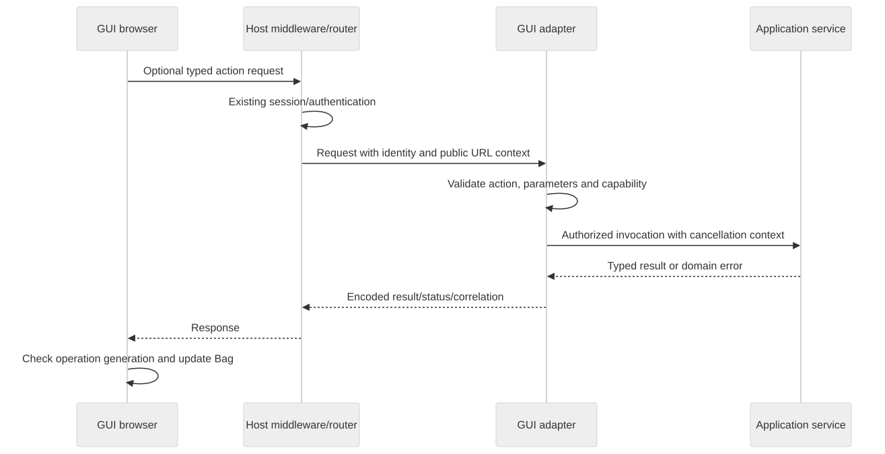
The adapter should expose an explicit action registry, not arbitrary Python attribute dispatch. Host authentication/session middleware remains authoritative. A page may use existing session identity without creating a parallel login system. Cookie-based action requests need the host's CSRF policy; socket requests need the host's origin/auth checks. These are adapter contract responsibilities, not database prerequisites.
Separate failures into route/permission errors, malformed typed input, incompatible client contract, domain validation, unexpected host error, timeout/cancellation and unavailable optional capability. Return stable error codes and correlation information; keep internal tracebacks in host logs. Do not treat a failed optional highlighter load like a failed page recipe, and do not retry a non-idempotent action automatically after uncertain delivery.
A stateless page needs request lifetime only. A registered resident page needs an explicit registry/lifetime provider. Optional WebSockets need ownership, close/reconnect and stale-result policies. Root-only physical sockets and nested-page routing should be added only with the already identified identity/cleanup contracts; they are not consequences of ASGI itself.
5.11 Incremental migration, if approved
| Stage | Transfer / preserve | Gate before proceeding |
|---|---|---|
| 0. Inventory | Capture dirty Pages/DOM/Builders work, actual client roots, dependency releases and existing import users | Reproducible snapshot; no lost uncommitted feature or backup |
| 1. Contract baseline | Preserve source/data typing, relative paths, node IDs, event order, input behavior and cleanup expectations | Current tests plus explicit gaps such as storeTree disconnect and rebinding |
| 2. Portable Python seam | Separate recipe/document/startup construction from routed HTTP response and worker registry | Build typed recipe/document without importing a server framework |
| 3. Browser capability seam | Separate minimum mount from inspector/RPC/channel; remove implicit host URL knowledge | Client-only page works without RPC/WS/database; registered behavior still passes |
| 4. Host adapters | Transfer routes/assets/context and Genro-specific registry/worker/WSX wiring to owning adapter | FastAPI/Starlette prefix tests plus original real worker test |
| 5. Asset pipeline | One authored source, manifest, locked dependency graph, wheel/ESM builds | Clean wheel launch without Node/siblings; standalone JS consumption; license manifest |
| 6. Source co-location | Move only after owner approves structure/name; retain history where feasible | Same behavior from new paths; no duplicated authoritative runtime copies |
| 7. Compatibility release | Preserve genro_pages.page.WebPage, existing exports and genro-dom-js public entry/collections where promised |
Existing import and asset-contract fixtures; documented deprecation policy |
| 8. Consumer adoption | Replace local overrides only with verified released artifacts | Demo and integration tests on installed release; explicit rollback path |
Preserve main(root), page client descriptors, recipe names and parameter meanings unless a concrete semantic change is approved. Inventory both genro_pages.hello_world.HelloWorldPage (legacy host) and genro_pages.pages.hello_world.HelloWorldPage (recipe): they are not interchangeable despite their class name. Worker entry-module strings and wheel resource paths count as compatibility surfaces alongside Python imports.
Tests added for migration should be observable contracts: same typed source after Python/JS round trip; root and prefixed startup; app isolation; no callback after disposal; node identity/focus for self-write and decoration updates; authorized/foreign identity behavior; stale async reply suppression; missing resource diagnostics; old/new manifest compatibility; clean installation without Node and sibling trees. Avoid asserting only that files moved to new directories.
Major risks are silent loss of dirty dependency work, mixing two Bag JS copies in one realm (instanceof/registry failures), mismatched SourceBag branch tags, lifecycle ownership split across host and core, prefix-incorrect absolute imports, package metadata promising assets it does not contain, and accidental legacy API claims. Keep fallback release artifacts available until the new package works in a clean environment.
Open decisions include repository and distribution names, public adapter/context names, release-set version policy, exact protocol negotiation, bundled collection selection, build tool, URL/cache policy, optional service discovery and the placement of Genro-specific transport. None should be settled by moving files first.
6. Glossary, maintenance map and open decisions
Version: 0.1 · 2026-09-08 · 🔴 DA REVISIONARE.
Snapshot boundary: Chapters 1–4 describe the client assembly C tested during this analysis. The authoritative DOM worktree changed concurrently: new form/validation code is described in the closing addendum. Claims of absence apply to the tested C runtime, not to that later unverified work.
In this chapter
- 6.1 Glossary
- 6.2 Concept → module → symbol → test
- 6.3 Current gaps and uncertainties
- 6.4 Decisions needing owner review
- 6.5 Refresh procedure for the next maintainer
6.1 Glossary
| Term | Meaning in this system |
|---|---|
| Adapter | Boundary translating reusable GUI behavior into a host/framework's routes, context, responses or transport |
| Application | DOM runtime object owning handler, target, events and a mounted builder; Pages extends it |
| ASGI | Python asynchronous application/server interface used by the current host and proposed portable HTTP adapter |
| Attribute | Metadata on a Bag node; source attributes may be recipe parameters, bindings or renderable HTML/CSS inputs |
| Backref | Parent/root linkage enabling nested Bag traversal and upward notification |
| Bag | Ordered labelled node tree; ordinary data container with typed values/attributes |
| Binding | Source value/attribute referencing Data; ^ subscribes, = reads passively |
| Bootstrap document | Initial HTML containing assets, startup configuration and empty render host |
| Builder | Grammar-aware source constructor plus render integration; Python static and JS reactive engines differ |
| Builder segment | Named branch under handler Data root, exposed as builder.data |
| Collection | Registered grammar and Web Component family; requiring it is not the same as downloading it |
| Component expansion | Builder method invoked at render time to generate temporary source blocks, possibly per row |
| Container method | Author-time recipe composition helper that adds source into its caller's target |
| Data element | Transparent recipe node performing setter/formula/controller logic rather than rendering DOM |
| Data widget | Widget such as storeTree receiving a Bag store property and owning its data subscription/rendering |
| Datapath | Source context used to resolve relative Data addresses |
| Dialect | Grammar/rendering family such as HTML or SVG |
| Fired value | Notification-bearing write whose stored value resets afterward |
| Generation guard | Counter/ticket preventing a late async completion from affecting a newer owner |
| Handler | Coordinator owning the rooted Data Bag, pointer map, logic scheduling and render queues |
| Host | Python application/server supplying routes, identity, services and process lifecycle |
| Hydration/import | TYTX class reconstruction followed by builder-owned source copying; not DOM hydration of server page markup |
| Inspector | Owned developer tool referring to real page Bags, with typed scalar draft editing |
| Live section | Synchronous mutation batch followed by formula drain and render flush; no rollback |
| Node ID | Author source anchor (node_id), distinct from HTML id and runtime target ID |
| Origin/reason | Bag event metadata identifying a write origin; used to suppress self-echo |
| Page ID | Optional host-issued registered identity used by Pages RPC, not a DOM node identity |
| Pointer map | Runtime index from absolute Data paths to source readers |
| Recipe | SourceBag describing structure, attributes and data logic before rendering |
| Renderer | Walk translating source nodes into dialect output |
| Shadow root | Encapsulated DOM owned by a Web Component; its native input differs from the recipe host |
| SourceBag | Builder-aware Bag with XS TYTX class identity; ordinary Bag uses X |
| Target | Consumer of full render/partial patches; DomTarget applies them to a host element |
| TYTX | Typed serialization boundary used for startup, recipes, data and RPC payloads |
| WSX | Existing Genro ASGI text-envelope request/reply protocol over WebSocket |
6.2 Concept → module → symbol → test
Repository coordinates are defined in Contents; each exact file is linked in the source symbol index. Test names are files unless a precise test function is useful. An associated passing test is evidence for its assertions, not for every behavior of the symbol.
| Concept | Module | Symbol(s) | Test / evidence |
|---|---|---|---|
| Python page authoring | P src/genro_pages/page.py |
WebPage.main |
P tests/test_hello_world.py |
| Fresh recipe request | P src/genro_pages/application.py |
WebpageApplication.get_main |
TestHelloWorld.test_recipe_crosses_asgi_and_builds_in_javascript |
| Document / recipe separation | P src/genro_pages/page_document.py |
PageDocument.build_body |
P tests/test_page_bootstrap.py, shell test in test_hello_world.py |
| Startup escaping | P src/genro_pages/page_document.py |
get_script_json |
P tests/test_page_bootstrap.py |
| Menu registration | P src/genro_pages/menu.py, application.py |
MenuBuilder, validate_menu |
P tests/test_hello_world.py, test_widget_pages.py |
| Registered identity | P src/genro_pages/application.py |
index, get_registered_page |
P tests/test_registered_page.py, test_registered_server.py |
| Worker host | P src/genro_pages/worker.py |
PageWorker, PageServer.run_sync |
Real worker test in P tests/test_registered_server.py |
| Client bootstrap | P js/src/bootstrap.js |
renderPage |
P tests/test_page_bootstrap.py, test_registered_channel.py |
| Source class identity | D src/source-bag.js; B builder/source_bag.py |
SourceBag, class registration |
P tests/test_typed_envelope.py; D tests/imported-source.test.js |
| Imported source ownership | D src/builder-base.js |
loadSource, _copyImportedSource |
D tests/imported-source.test.js, P test_hello_world.py |
| Relative / marked paths | D src/source-bag.js |
absDatapath, _resolveSymbolicDatapath |
D tests/abs-datapath.test.js |
| Reactive vs passive read | D src/builder-base.js |
runtimeValues |
D tests/actions.test.js, reactive-logic.test.js |
| Input-to-data | D src/application.js |
_enableInput, _applyMutation |
D tests/writeback.test.js |
| Anti-echo | D src/builder-handler.js |
_onDataEvent |
D writeback test “the originating node is not re-rendered” |
| Stable explicit HTML ID | D src/contrib/html/html-builder.js, target-wrapper.js |
_autoId, _byId |
D tests/explicit-dom-id.test.js |
| Source insert/remove | D src/builder-base.js |
_onSourceEvent, renderNodes |
D tests/structural.test.js |
| Render reconciliation | D src/target-wrapper.js |
_reconcile, _patchAttributes |
D tests/widget-labels.test.js, layout-containers.test.js |
| Action context | D src/services/recipe-runtime.js |
RecipeRuntime.run |
D tests/actions.test.js |
| Page topics | D src/services/topics.js |
subscribe, publish, dispose |
D tests/actions.test.js, P test_runtime_consumers.py |
| Formula cascade | D src/builder-handler.js |
_drainFormulas |
D tests/reactive-logic.test.js, component-rules.test.js |
| Component expansion | D src/renderer/base.js |
_renderComponent, _expandBlock |
D tests/component.test.js |
| Per-row updates | D src/builder-handler.js, builder-base.js |
_expansionRow, renderNodes |
D tests/per-row-patches.test.js |
| Collection registration | D src/collections.js |
registerCollection, webcomponent |
D tests/widgets.test.js |
| CSS adaptation | D src/contrib/html/html-attributes.js |
HtmlAttributes.adaptAttrs |
D tests/style-adapter.test.js |
| Label independence | D src/widget-label.js |
WidgetLabel.apply |
D tests/widget-labels.test.js, P test_widget_labels.py |
| Null vs empty | D src/input-null-state.js |
InputNullState.clear, setNull |
D tests/input-null.test.js, P test_input_null.py |
| One-time defaults | D src/recipe-defaults.js |
initializeNode |
D tests/sliders-defaults.test.js, P test_slider_defaults.py |
| Choice validity | D src/collections/inputs.js |
GnrComboBox, GnrFilteringSelect |
D tests/choices.test.js |
| Store-tree lifetime | D src/collections/storetree.js |
_resubscribe, disconnectedCallback |
Existing storetree.test.js; additional diagnostic in verification confirms leak |
| Palette and stack | D src/collections/palette.js, layout.js |
defineComponents |
D tests/palette.test.js, stack.test.js |
| Inspector mutation | P js/src/inspector-editor.js |
getUnchanged, apply |
P tests/test_inspector_editing.py |
| Playground ownership | P js/src/lab-session.js, playground.js |
LabSession.dispose, mountPlayground |
P tests/test_playground.py, test_runtime_consumers.py |
| Async editor cleanup | P js/src/codemirror-component.js |
connectedCallback, disconnectedCallback |
P tests/test_codemirror_labels.py, test_runtime_consumers.py; CDN visual pass not rerun |
| RPC correlation | P js/src/rpc.js |
_sendCall, _receiveMessage |
P js/tests/rpc.test.mjs |
| Real WSX boundary | P src/genro_pages/worker.py, application.py |
worker and registered routes | P tests/test_registered_server.py |
| Whole-page disposal | D src/application.js, P js/src/application.js |
dispose |
P tests/test_runtime_disposal.py |
| Generic validation / form | No new runtime module | No implemented service | Proposal only; legacy genro_frm.js is reference |
| Portable FastAPI adapter | No current adapter | Placeholder APIs in Chapter 5 | Proposed integration/packaging contracts, not passing implementation tests |
6.3 Current gaps and uncertainties
| Area | Observed limitation | Consequence / next verification |
|---|---|---|
| Store-tree cleanup | Missing unsubscribe options leave callback active after disposal | Reproduced; future fix/test belongs to D |
| Binding re-registration | Attribute/inherited-datapath changes need broader exact-key/descendant audit | Inspect pointer-map removal and prove old paths stop triggering |
| Focus preservation | Anti-echo and selected reconciliation branches exist, not universal DOM identity retention | Real-browser tests for external and structural updates |
| Action language | Trusted Function execution; no general legacy macro compiler | Use method APIs; do not port legacy string syntax blindly |
| Async source lifecycle | Page/service guards exist; no universal removed-node callback ownership | Add explicit source-owned cancellation contract before general remote providers |
| Data providers | Setter/formula/controller slices exist; remote grammar is not operational dataRpc | Design and test provider cancellation/errors separately from RPC transport |
| Validation/forms | Native validity and inspector parsing only | Proposed rule engine and Bag form require reviewed contracts |
| Null policy | Explicit null/empty preserved; configurable blankIsNull/view_null absent | Owner must settle default normalization and visual policy |
| Store widgets | Own subscriptions/state; generic scalar reactivity does not cover all store replacement behavior | Replace stores while retaining expansion/selection and ensure old subscriptions disappear |
| Resource discovery | Eager collection imports and fixed shell paths | No selective late collection loading or normalized page resource declarations |
| Prefix mounting | Root guard and root-absolute links/imports/WSX endpoint | Coherent URL seam needed before common ASGI mount |
| Production distribution | Pages JS included, complete dependencies still external | Clean wheel without Node/siblings remains a release gate |
| Client-only bootstrap | Standalone DOM works; registered Pages opens channel and fetches tools | Proposed capability split must be implemented and tested |
| Host lifecycle | Registered startup proven; full close/expiry/freeze/resume/reconnect unproven | Do not infer persistence from worker registration |
| Mobile/accessibility | Some pointer/keyboard paths exist | Actual device, focus, ARIA and layout review still required |
| Snapshot reproducibility | Dirty runtime and Builders work plus copied client assembly | Use hashes and preserve source changes before release/consolidation |
6.4 Decisions needing owner review
- Whether to unify repositories at all; provisional repository name and retained distribution names.
- Public names for portable page/document/context/adapter contracts; dependency extras and old import lifetime.
- Release-set version policy, supported startup/recipe ranges and capability negotiation.
- Asset build tool, collection selection, generated manifest, cache/URL strategy and source-development overrides.
- Boundary of a common ASGI adapter versus FastAPI route dependencies and Genro worker/WSX integration.
- Source lifecycle/cancellation guarantees and input identity promises during external updates.
- Explicit/automatic
labledBoxsemantics, inherited field styles and path/layout ownership. blankIsNulldefault, any alias precedence,view_null, invalid draft write policy and checkbox presentation.- Validation coercion/rule compatibility and portable form scope, baseline comparison and save concurrency policy.
- Which legacy recipe-language/event/provider behaviors are worth preserving, and which differences are intentional.
These are review decisions, not tasks executed by this document. The existing worktrees, runtime and application source remain untouched.
6.5 Refresh procedure for the next maintainer
Record HEAD/branch/status and actual Python import files; compare D src with the served DOM copy; read the latest roadmap/consolidation notes; run the appropriate installed-assembly tests; update the manifest and affected chapters. When a proposal becomes implementation, replace its “proposed” label only after reading the landed code and tracing a concrete consumer test. A later commit or changed version number alone is insufficient evidence.
7. Closing addendum: concurrent form and validation implementation
Version: 0.1 · 2026-09-08 · 🔴 DA REVISIONARE.
In this chapter
- Why this addendum is necessary
- Later source read at close
- New Python/JS integration surface
- Reading the rest of the manual after this change
Why this addendum is necessary
Another development task changed the authoritative DOM worktree during this documentation analysis. Initially D src and served assembly C genro-dom-js/src matched. At the closing comparison they differed, and D contained new form, validator, field-policy and labelled-box code. P also gained form/labledBox declarations and form integration tests. This manual must therefore describe two observed states, rather than falsely treating the worktree as frozen or promoting unverified new work to the tested baseline.
Chapters 1–4 describe the runtime read initially and tested in C. The 100 Pages, 184 DOM and 3 RPC results apply to that run and its collected tests. Newly added tests/test_forms.py was not in the initial collection of 100 tests. No existing test result in this document is evidence that the new form implementation passed its own acceptance criteria.
observed-state.json captures an earlier traversal of repositories; some concurrently created files already existed by that traversal. It is not an atomic checkout snapshot. closing-state.json separates C runtime hashes from current D/P hashes so this distinction survives the conversation. Direct links to D open its current, potentially newer source; consult C and the recorded hashes to identify the tested implementation.
Later source read at close
| New / changed D module | Symbols read | Observed responsibility and state |
|---|---|---|
src/forms/service.js |
FormService.start/schedule/sync/commit/getForm/publishState/dispose |
Page-owned field/controller maps, Data/Source subscriptions, queued reconciliation, unique form identity checks and projected controller state |
src/forms/controller.js |
FormController.initialize/load/save/restoreBaseline/state/dispose |
Bag scope, detached baseline, store interface, dirty/valid/pending/loading/saving state, operation serial and AbortController |
src/forms/field.js |
FormField.sync/readCandidate/commit/render/dispose |
Source-owned field path/configuration, typed candidate parsing, validation issues, editor dirty state, async generation/signature protection and widget feedback |
src/forms/validator.js |
Validator.validate/_run/_rule/_accept |
Ordered local rules, transformations and issues; custom async callbacks; explicit adapter requirements for DB/grid rules |
src/forms/value-snapshot.js |
ValueSnapshot.copy/equal, MemoryStore.load/save |
Typed detached Bag/Date/array/plain-object snapshots, strict comparison and in-memory persistence; reject cycles/resolvers/unsupported instances |
src/collections/forms.js |
registered forms collection, GnrForm |
form grammar maps to gnr-form, slot/group and validation summary |
src/recipe-policies.js |
RecipePolicies.getAttributes/getValue |
Inherited label/blankIsNull policy and selected fld_* defaults, evaluated in declaring scope; blocks identity/path defaults |
src/application.js |
new FormService / Validator integration, _writeMutation split |
Form/field participation before writes and at mount/dispose; no longer identical to C Application |
src/source-bag.js |
getFormHandler, changed policy attributes |
Source access to form ownership and controller metadata |
src/services/recipe-runtime.js |
new evaluate, changed run |
Value-returning source-scoped callback evaluation, callable support and expanded reserved-word filter |
src/collections/layout.js, widget-label.js |
changed label/container implementation | Labelled-box work accompanies the new policies; not covered by the old C label tests |
| Builder/handler/renderer/target/input modules | integration changes | Field-aware rendering and synchronization under active development |
The new service identifies a portable form by nodeTag='form' and _meta.render_tag='gnr-form'; a generic HTML form or mere formId marker is not automatically that controller. It rejects duplicate/missing form IDs, nested form ownership, a changed form datapath and a field outside the form's subtree in the inspected version. controllerPath projects state outside the form data and rejects overlapping paths. These are observed implementation checks, not ratified final API promises.
The controller separates dirty, valid, pending, editorDirty, locked, loading, saving and persistenceError. Save flushes editors, blocks invalid/pending/locked state, snapshots the actual saved draft, and updates baseline to that snapshot after success so later edits can remain dirty. Load can require explicit discard, checks operation identity and detects concurrent data changes. The default store is memory-backed. Dispose advances operation serial and aborts work. These mechanisms are present in source, but their comprehensive correctness and browser behavior were not established by this manual's earlier tests.
The validator follows the familiar ordered rule list but deliberately uses strict finite numeric checks for min/max and rejects database/grid rules without separate adapters. remote currently requires an injected function rather than an RPC method name. call and custom callbacks can return Promises; the field layer owns effects and staleness. This is already more than a design document, but remains new uncommitted work in D, not proof of complete legacy compatibility or integration into the active served assembly.
The new ValueSnapshot excludes specific transient validation/display metadata from persisted copies, retains scalar type distinctions, and has explicit supported object families. That is a more specialized contract than arbitrary Bag transport: a successful TYTX round trip does not prove a value is accepted by the form snapshotter.
New Python/JS integration surface
P src/genro_pages/widget_test_builder.py now declares form and labledBox in addition to the earlier verticalSlider addition. New P tests/test_forms.py and tests/forms.mjs describe Python recipes crossing JSON and MessagePack to the common form lifecycle; D has tests/forms.test.js. The inspected Python test includes formId, datapath, controllerPath, blankIsNull, nested labelled box, local/callback/async validation and memory save.
Those files are new work observed, not examples declared executable with C as currently assembled. Merely adding the Python grammar does not load the DOM forms collection in GalleryBuilder or replace the active client snapshot. Before adopting it, verify the actual client module root, required collection import, direct DOM tests, both Python transport cases, source removal/disposal, async stale results, focus and baseline/save semantics.
Reading the rest of the manual after this change
Statements such as “no general validator/form service exists” and “blankIsNull/labledBox are proposed” apply to the tested C baseline. They do not describe the newer D worktree globally. The original review document remains a proposal; the closing worktree now contains an implementation attempt for part of it. The owner's approval status, completion and release are not inferred from file appearance.
The proposed repository/adapter design in Chapter 5 remains independent of whether these form modules are accepted. A portable form would naturally stay in the browser GUI package, with persistence adapters optional. It must not introduce a database or WebSocket requirement into basic page rendering.
Verification and reproducibility record
Version: 0.1 · 2026-09-08 · 🔴 DA REVISIONARE.
Scope
Read the user-provided handoff, canonical Pages CLAUDE.md, parent policies, .phased/roadmap.md and archived plans, development checkout record, architecture/authoring/handoff documents, and the labelled-box/form proposal. Read current Python hosting and recipe code, browser integration, DOM model/rendering/reactivity/collection code, installed Bag notification APIs and targeted legacy source. The source navigation index and file hashes identify time-stamped observations. A concurrent task changed D and P; see the closing addendum and separate closing manifest. The test counts refer to the earlier collected suite, not to tests added afterward.
Only documentation and temporary verification tooling were written. No runtime source, dependency checkout, existing test, workflow plan, branch or repository was changed. The reference suite runs and a standalone diagnostic exercise existing code without introducing new runtime behavior. No Git commit or release was made.
Executed checks
| Check | Result | Interpretation |
|---|---|---|
Pages pytest tests/ with documented source overrides and C module root |
99 passed, 1 environment-blocked; 100 collected; 66.22 s | The launched-server case could not bind loopback inside the sandbox |
Isolated rerun pytest tests/test_registered_server.py with local socket permission |
1 passed, 1.22 s | Actual worker/HTTP/WebSocket test; all 100 Pages cases passed across the two runs |
C genro-dom-js: node --test tests/*.test.js |
184 passed, zero failures; 5.95 s | Real current DOM assembly under jsdom |
Pages js/tests/rpc.test.mjs with tests/lab_loader.mjs |
3 passed, zero failures | Focused RPC service tests with controlled Socket, not a real network claim |
D src/ vs C genro-dom-js/src/ |
diff -qr reported no differences |
Initial comparison matched; closing comparison diverged during concurrent form development |
| Python import provenance | Pages/B source overrides, installed Bag 0.21.1, TYTX 0.15.0, ASGI 0.43.1 | Pages has no installed distribution metadata; do not infer wheel verification |
| Existing Git hook inventory | Recorded in observed-state.json |
Read-only inventory; hooks were not installed/rewritten for a documentation task |
| storeTree retained-Bag diagnostic | One _render callback after disposal |
Reproduced runtime gap, not fixed |
See Chapter 4 for complete commands and directory settings. The original failed test was not a product regression: it failed at reservation.bind(('127.0.0.1', 0)) with PermissionError: [Errno 1] Operation not permitted, before constructing the server. Only that environment-blocked test was rerun with the needed permission.
storeTree diagnostic
Run from canonical P after exporting the same GENRO_CLIENT_MODULES as Chapter 4:
node --experimental-loader ./tests/lab_loader.mjs --input-type=module <<'JS'
import {setupDom} from './temp/client-releases-20260908/genro-dom-js/tests/dom.js';
import {Bag} from 'genro-bag-js';
import {Application, HtmlBuilder} from 'genro-dom-js';
import '/_assets/dom/collections/storetree.js';
setupDom();
class Page extends HtmlBuilder {
static wc_requires = ['storeTree'];
setup(data) { data.setItem('items', new Bag({x: 'one'})); }
main(root) { root.storeTree({store: '^items'}); }
}
const host = document.createElement('div');
document.body.append(host);
const app = new Application(host, new Page('main'));
const bag = app.builder.data.getItem('items');
const tree = host.firstElementChild;
let callbacks = 0;
const original = tree._render.bind(tree);
tree._render = () => { callbacks++; original(); };
app.dispose();
bag.setItem('x', 'after disposal');
console.log({detached: !tree.isConnected, renderCallbacksAfterDispose: callbacks});
JS
Observed: detached true, callbacks 1. The temporary wrapper counts actual widget render calls; it does not replace Bag, Application, renderer or DOM with mocks. Bag's unsubscribe default flags are all false, while storeTree omits them. This is retained-callback evidence, not a quantified long-running memory benchmark.
Diagram validation
Embedded Mermaid is the authoritative diagram source. Standalone .mmd, rendered .svg and .png files are in diagrams. All 13 diagrams passed Mermaid parse and SVG rendering. The rendering report records Mermaid/browser version and dimensions. A PNG contact sheet was visually inspected; overly wide diagrams and the lifecycle layout were revised and rendered again. Local document/source links were checked for existing targets. Rendering used a temporary local tool installation and headless Chrome; it did not navigate or reload the user's existing app/demo tabs.
Official host references checked
- FastAPI subapplications and mounts
- FastAPI static files
- FastAPI lifespan
- Starlette routing
- Starlette lifespan
These establish the host primitives used in the proposal. They do not establish the existence of PortableGui, AsgiGui, a portable startup manifest or the new context/capability APIs. Those names are placeholders in clearly labelled pseudocode, and the examples were not run as implemented GUI integrations.
Checks not performed
No fresh real-browser walkthrough of the running Pages demo, no physical touch-device check, no complete browser accessibility audit, no new clean-wheel launch, no Python-version matrix, no newly implemented FastAPI/Starlette integration and no full legacy test suite. Existing notes describe historical browser/release work; the manual does not relabel those as results from this run. Visual verification here is limited to the manual's diagrams, not the product UI.
Snapshot refresh
observed-state.json contains full repository status and source/test SHA256 hashes. It records relevant local changes, not just commits. Do not reproduce this run from clean HEAD alone. A later DOM copy refresh or another task's edit invalidates its snapshot equality and may change this manual's findings.
Source and test symbol index
Version: 0.1 · 2026-09-08 · 🔴 DA REVISIONARE — draft.
This mechanically extracted index complements the responsibility atlas; it does not classify every private method as public API. Symbols are navigation aids, and file hashes are in observed-state.json. P, D and B are defined in the main manual.
P/src/genro_pages/init.py
Module declarations / test cases.
P/src/genro_pages/main.py
Cli, run
P/src/genro_pages/application.py
WebpageApplication, __init__, main, get_main, get_menu, get_inspector, get_registered_page, validate_menu, index, __call__
P/src/genro_pages/demo.py
DemoMenu, main, DemoApplication, __init__
P/src/genro_pages/hello_world.py
HelloWorldPage, main
P/src/genro_pages/inspector.py
build_inspector, build_view
P/src/genro_pages/menu.py
MenuElements, branch, webpage, MenuBuilder
P/src/genro_pages/page.py
WebPage, main
P/src/genro_pages/page_document.py
PageDocument, __init__, main, get_script_json, build_head, build_body, build_menu
P/src/genro_pages/pages/init.py
Module declarations / test cases.
P/src/genro_pages/pages/about.py
AboutPage, main
P/src/genro_pages/pages/hello_world.py
HelloWorldPage, main
P/src/genro_pages/pages/playground.py
PlaygroundPage, main
P/src/genro_pages/pages/widgets/init.py
Module declarations / test cases.
P/src/genro_pages/pages/widgets/bordercontainer.py
BorderContainerTestPage, test_01_basic, test_02_isolation
P/src/genro_pages/pages/widgets/box.py
BoxTestPage, test_01_basic, test_02_isolation
P/src/genro_pages/pages/widgets/button.py
ButtonTestPage, test_01_basic, test_02_topics
P/src/genro_pages/pages/widgets/checkbox.py
CheckboxTestPage, test_01_basic, test_02_isolation
P/src/genro_pages/pages/widgets/colorpicker.py
ColorpickerTestPage, test_01_basic, test_02_isolation
P/src/genro_pages/pages/widgets/combobox.py
ComboBoxTestPage, test_01_basic, test_02_isolation
P/src/genro_pages/pages/widgets/copybutton.py
CopyButtonTestPage, test_01_basic, test_02_isolation
P/src/genro_pages/pages/widgets/datetextbox.py
DateTextBoxTestPage, test_01_basic, test_02_isolation
P/src/genro_pages/pages/widgets/filteringselect.py
FilteringSelectTestPage, test_01_basic, test_02_isolation
P/src/genro_pages/pages/widgets/horizontalslider.py
HorizontalSliderTestPage, test_01_basic, test_02_isolation
P/src/genro_pages/pages/widgets/numbertextbox.py
NumberTextBoxTestPage, test_01_basic, test_02_isolation
P/src/genro_pages/pages/widgets/palette.py
PaletteTestPage, test_01_basic, test_02_isolation, build_palette
P/src/genro_pages/pages/widgets/panel.py
PanelTestPage, test_01_basic, test_02_isolation
P/src/genro_pages/pages/widgets/passwordbox.py
PasswordboxTestPage, test_01_basic, test_02_isolation
P/src/genro_pages/pages/widgets/stackbuttons.py
StackButtonsTestPage, test_01_basic, test_02_isolation
P/src/genro_pages/pages/widgets/stackcontainer.py
StackContainerTestPage, test_01_basic, test_02_isolation
P/src/genro_pages/pages/widgets/storetree.py
StoreTreeTestPage, test_01_basic, test_02_isolation
P/src/genro_pages/pages/widgets/tab.py
TabTestPage, test_01_basic, test_02_isolation
P/src/genro_pages/pages/widgets/tabcontainer.py
TabContainerTestPage, test_01_basic, test_02_isolation
P/src/genro_pages/pages/widgets/textbox.py
TextBoxTestPage, test_01_basic, test_02_isolation
P/src/genro_pages/pages/widgets/timetextbox.py
TimeTextBoxTestPage, test_01_basic, test_02_isolation
P/src/genro_pages/server_configuration.py
PageConfiguration, __init__, main
P/src/genro_pages/widget_test_builder.py
WidgetTestBuilder, copyButton, palette, codeMirror, details, div, textBox, filteringSelect, comboBox, passwordbox, numberTextBox, dateTextBox, timeTextBox, horizontalSlider, verticalSlider, checkbox, panel, box, borderContainer, tabContainer, stackContainer, contentPane, stackButtons, tab, colorpicker, storeTree
P/src/genro_pages/widget_test_page.py
WidgetTestPage, main
P/src/genro_pages/worker.py
PageServer, __init__, run_sync, PageWorker
P/js/src/application.js
PageApplication, constructor, dispose
P/js/src/bag-xml-view.js
bagXmlView
P/js/src/bootstrap.js
renderPage
P/js/src/codemirror-component.js
defineComponents, CodeMirrorElement
P/js/src/dev.js
DeveloperTools, constructor, dispose
P/js/src/gallery.js
GalleryBuilder
P/js/src/inspector-editor.js
InspectorEditor, constructor, getField, setStatus, getType, getParsed, getCurrentNode, getUnchanged, setAvailability, refresh, reload, appendRow, add, toggleRemoval, apply, dispose
P/js/src/inspector.css
stylesheet
P/js/src/inspector.js
mountInspector
P/js/src/lab-session.js
EmptyPage, main, LabSession, constructor, reset, dispose, run
P/js/src/module.js
createRequire
P/js/src/playground-page.js
PlaygroundBuilder
P/js/src/playground.js
mountPlayground
P/js/src/recipe-highlight.js
highlightRecipes
P/js/src/rpc.js
RpcService, constructor, _sendCall, _receiveMessage, dispose
P/js/src/shell.css
stylesheet
P/js/src/shortcuts.js
Shortcuts, constructor, register, execute, dispose
P/js/src/theme.css
stylesheet
P/js/src/xmldom.js
DOMParser
P/js/tests/rpc.test.mjs
Socket, constructor, send, answer, close, Connecting
P/tests/init.py
Module declarations / test cases.
P/tests/codemirror_labels.mjs
Page, setup, main
P/tests/data_recipe.mjs
Page, main
P/tests/input_null.mjs
Module declarations / test cases.
P/tests/inspector.mjs
Module declarations / test cases.
P/tests/inspector_editing.mjs
Example, setup, main
P/tests/lab_loader.mjs
resolve
P/tests/page_bootstrap.mjs
Module declarations / test cases.
P/tests/playground.mjs
Module declarations / test cases.
P/tests/registered_channel.mjs
Socket, constructor, send, close
P/tests/render_recipe.mjs
Module declarations / test cases.
P/tests/render_widget.mjs
GalleryBuilder
P/tests/runtime_consumers.mjs
Checks, mount, inspector
P/tests/runtime_disposal.mjs
Page, setup, main, Fixture, mount, idempotent, stale, ObservedPage, pending, Formulas, Controllers, RenderingPage
P/tests/slider_defaults.mjs
Page
P/tests/test_codemirror_labels.py
test_codemirror_labels
P/tests/test_data_recipe.py
test_gui_data_alias, test_generic_node_keeps_datastore_property, test_javascript_gui_alias
P/tests/test_hello_world.py
RequestSupport, request, receive, send, modules, TestHelloWorld, test_recipe_crosses_asgi_and_builds_in_javascript, test_shell_and_assets_are_served_without_server_rendering, TestPages, test_menu_links_open_the_browser_shell, test_page_selection_and_nested_menu
P/tests/test_input_null.py
test_python_null_inputs
P/tests/test_inspector.py
test_inspector_session
P/tests/test_inspector_editing.py
test_inspector_editing
P/tests/test_page_bootstrap.py
BootstrapChecks, get_response, get_document, get_client_result, ExtendedDocument, build_head, ProbeDocument, EncodedMenu, main, TestPageBootstrap, test_document_is_built_in_python_without_main_recipe, test_startup_bag_round_trips_safely_through_html, test_index_resolves_registered_page_and_transport, test_declared_client_works_for_arbitrary_routes, test_document_menu_preserves_bag_destinations, test_configured_startup_preserves_runtime_ownership
P/tests/test_playground.py
test_playground_session
P/tests/test_registered_channel.py
ChannelChecks, check_client, check_ownership, test_registered_startup_order, test_page_identity_does_not_authorize_another_connection, test_disposed_startup_cannot_mount_late_results, test_rpc_default_is_configurable_in_the_python_startup, test_rpc_failure_and_concurrency_contracts, test_failed_mount_shows_startup_error
P/tests/test_registered_page.py
RegisteredPageChecks, __init__, get_document, get_startup, registered_pages, test_html_identity_is_already_registered, test_page_loads_have_distinct_identities, test_unknown_page_does_not_register, test_wrong_user_cannot_reuse_connection, test_stale_cookie_creates_a_new_connection
P/tests/test_registered_server.py
test_real_worker_registers_pages_before_their_channels_open
P/tests/test_runtime_consumers.py
TestRuntimeOwnership, _check, test_rebuild_disposes_only_previous_experiment, test_page_disposal_owns_inspector_and_shortcut, test_late_bootstrap_completion_cannot_revive_old_page
P/tests/test_runtime_contract.py
TestRuntimeContract, test_scenario_has_verifiable_contract
P/tests/test_runtime_disposal.py
TestRuntimeOwnership, _check, test_dispose_is_idempotent_and_preserves_peer, test_disposed_runtime_ignores_old_events_and_bag_updates, test_dispose_releases_owned_topics_and_pending_work
P/tests/test_slider_defaults.py
TestSliderDefaults, test_python_sliders_seed_numeric_data_and_commit
P/tests/test_typed_envelope.py
TestTypedEnvelope, test_source_data_and_raw_cross_javascript
P/tests/test_widget_labels.py
TestWidgetLabels, test_python_recipe_uses_the_standalone_widget_label_runtime
P/tests/test_widget_pages.py
TestWidgetPages, test_real_widget_mounts_from_page_recipe
P/tests/typed_envelope.mjs
Module declarations / test cases.
P/tests/widget_labels.mjs
Widgets, setup
D/src/application.js
Application, constructor, mountBuilder, dispose, _listen, subscribe, publish, _runRecipe, data, root, render, live, mutate, _applyMutation, _mutationNode, _mutationWrite, _typedValue, _enableInput, _enableCommands
D/src/builder-base.js
compileFunc, BuilderBase, constructor, defineGrammar, _containers, containerMethod, schema, schemaTagNames, schemaTag, bagCall, commandOnNode, setChild, _autoLabel, nodeById, runtimeValues, nodeByTargetId, targetId, setData, _isReactive, _onSourceEvent, _valueNature, _onUpdValue, _onUpdAttrs, dataLogic, _buildDataLogic, _resolveLogicFunc, _bindings, computeLogic, _computeNode, _onStartDataElements, setup, main, wcRequires, _resolveComponents, _expansionRoot, _resolveCollections, loadSource, _copyImportedSource, create, dispose, _renderer, setRenderTarget, render, renderNodes, _insertAnchor, _rowInsertAnchor, _writebackAdd, _purgeWritebackPrefix
D/src/builder-handler.js
RowContext, constructor, builder, _abs, GET, SET, PUT, FIRE, BuilderHandler, dispose, data, addBuilder, source, activate, render, _registerPath, _unregisterPointer, _updatePointerMap, recordRemovedId, removedTargetId, _relevantNodes, executeLogic, _enqueueFormula, _drainFormulas, setComponentRules, _ruleSpec, _runComponentRules, _rulesFor, _dispatchRule, _runSharedRule, _executeRule, _onDataEvent, _expansionRow, addRenderPath, _optimizeRender, live
D/src/collections/clipboard.js
defineComponents, CopyButton
D/src/collections/colorpicker.js
defineComponents, GnrColorpicker
D/src/collections/forms.js
defineComponents, GnrForm
D/src/collections/inputs.js
defineComponents, GnrInput, GnrTextBox, GnrComboBox, GnrFilteringSelect, GnrPasswordbox, GnrNumberTextBox, GnrDateTextBox, GnrTimeTextBox, GnrHorizontalSlider, GnrVerticalSlider, GnrCheckbox
D/src/collections/layout.js
defineComponents, GnrPanel, GnrBox, GnrBorderContainer, GnrTab, GnrTabContainer, GnrStackContainer, GnrContentPane, GnrStackButtons, GnrLabledBox
D/src/collections/palette.js
defineComponents, Palette
D/src/collections/storetree.js
defineComponents, GnrStoreTree
D/src/collections.js
registerCollection, getCollection, webcomponent, injectCollectionCss
D/src/contrib/html/html-attributes.js
isStyleAttr, parseStyleString, HtmlAttributes, constructor, adaptAttrs, _isStyleContribution, _adaptStyle, _cssValue
D/src/contrib/html/html-builder.js
HtmlBuilder, renderer_html, HtmlRenderer, renderedItem, _applyAttrs, _autoId, _datapathAttrs, adaptAttrs
D/src/contrib/html/html5-elements.js
Module declarations / test cases.
D/src/contrib/svg/svg-builder.js
SvgBuilder, renderer_svg, SvgRenderer, renderedItem
D/src/contrib/svg/svg-elements.js
Module declarations / test cases.
D/src/index.js
Module declarations / test cases.
D/src/input-null-state.js
InputNullState, constructor, locked, connect, setNull, clear
D/src/pointer.js
isPointer, parsePointer, scanForPointers
D/src/recipe-defaults.js
RecipeDefaults, constructor, initializeBag, initializeNode
D/src/recipe-policies.js
RecipePolicies, getAttributes, getValue
D/src/renderer/base.js
RendererBase, constructor, builder, addRender, getRender, render, renderChildren, _renderComponent, _expansionInputs, _expandBlock, renderExpansionBlock, _registerExpansionWriteback, _registerCell, preprocess, renderedItem, _handleMeta, adaptAttrs, adapt, finalize
D/src/services/recipe-runtime.js
RecipeRuntime, constructor, run
D/src/services/topics.js
TopicService, constructor, subscribe, dispose, publish
D/src/source-bag.js
canonicalName, SourceBagNode, builder, handler, dataHandler, rootBuilder, rootBuilderName, _getMeta, pointerType, pointers, fixedAttrItems, runtimeToEvaluate, absDatapath, _composeAbsPath, _composeRelativeDatapath, _collapseParentDatapath, _resolveSymbolicDatapath, _findMarkedDatapathAncestor, getRelativeData, setRelativeData, fireEvent, SET, GET, PUT, FIRE, SourceBag, constructor, nodeClass, splitArgs, wrapSource, elementCall
D/src/target-wrapper.js
TargetWrapper, acceptsPartial, renderOpts, full, partial, DomTarget, constructor, _remember, _reconcile, _patchAttributes, _recordValue, _byId
D/src/utils.js
isBag
D/src/widget-label.js
WidgetLabel, constructor, enabled, connect, disconnect, isDecoration, position, getAttributes, setAttributes, apply
D/tests/abs-datapath.test.js
leaf, Page, simple, withDatapath
D/tests/actions.test.js
Page
D/tests/choices.test.js
Page, setup, main
D/tests/clipboard.test.js
Page
D/tests/component-rules.test.js
Probe, constructor, acceptsPartial, renderOpts, full, partial, OrderPage, orderRow, setup, main, rowTotal, convert, mount, NotedPage, LoopPage
D/tests/component.test.js
StatesPage, stateRow, setup, main, EmptyPage, CardPage, ForestPage
D/tests/container.test.js
Page, card, main, LayoutPage
D/tests/deferred-mount.test.js
Page, main, Broken
D/tests/dom.js
setupDom
D/tests/embryo.test.js
ProbeTarget, constructor, acceptsPartial, renderOpts, full, partial, StaticPage, main, ReactivePage, setup
D/tests/explicit-dom-id.test.js
Page
D/tests/forms.test.js
mount, Page
D/tests/imported-source.test.js
Module declarations / test cases.
D/tests/input-null.test.js
mount, Page
D/tests/layout-containers.test.js
mountApp, BorderPage, main, TabPage, setup, ResizablePage, DrawerPage, FourSides
D/tests/palette.test.js
Page
D/tests/per-row-patches.test.js
Probe, constructor, acceptsPartial, renderOpts, full, partial, OrderPage, orderRow, setup, main, mount, LonePage, WidePage, FloodPage
D/tests/pointer.test.js
Module declarations / test cases.
D/tests/reactive-logic.test.js
Probe, acceptsPartial, renderOpts, full, partial, mount, TriPage, BoxPage, CascadePage, OrderLogic, OrderPage, CallablePage, CodePage, PingPong
D/tests/sliders-defaults.test.js
mount, Page
D/tests/stack.test.js
Page
D/tests/storetree.test.js
TreePage, setup, main, mount, Page
D/tests/structural.test.js
CapturingTarget, partial, ListPage, main, mounted, freshHtml
D/tests/style-adapter.test.js
render, Page, main
D/tests/svg.test.js
Chart, main
D/tests/widget-labels.test.js
mounted, Page
D/tests/widgets.test.js
WidgetsPage, setup, main, CbPage, Page2, LabelPage
D/tests/writeback.test.js
FormPage, setup, main, LiveFormPage, fire
B/src/genro_builders/builder/init.py
Module declarations / test cases.
B/src/genro_builders/builder/_decorators.py
body, _DeclarativeMarker, __init__, _ref_empty_body, _ref_empty_body_with_docstring, _is_empty_body, _warn_if_body_present, element, page, container, li, decorator, abstract, schema, phrasing, p, base_container, widget, some_internal_name, _mark, decorate, component, product_card
B/src/genro_builders/builder/_grammar.py
_GrammarMixin, _bag_call, __getattr__, wrapper, _resolve_subbuilder_reference, _add_element, set_child, _is_singleton, _auto_label, _resolve_collection_key, _value, _command_on_node, _validate_declared_names, _validate_call_args, _validate_children_tags, _validate_sub_tags, require_sub_tag_validation, custom_require_sub_tag_validation, _validate_parent_tags, __contains__, _get_schema_info, __iter__, __repr__, __str__
B/src/genro_builders/builder/_grammar_export.py
_topological_sort, _parse_inherits_from, _meta_copy, _abstract_form, _element_form, _section_topologically_sorted, get_deps, _class_schema_to_grammar_document
B/src/genro_builders/builder/_utilities.py
_split_annotated, _check_type, _extract_signature_info, _parse_parent_tags_spec, _parse_sub_tags_spec, _decorated_method_info, _pop_decorated_methods, _iter_data_element_methods
B/src/genro_builders/builder/_validators.py
Regex, __call__, Range
B/src/genro_builders/builder/base.py
BuilderBase, __init_subclass__, get_builder_class, to_grammar, __init__, renderer_xml, renderer_yaml, new_root, _expansion_root, get_subbuilder, _builder_class_from_grammar, main, setup, create, node_by_id, target_id, compute_logic, _compute_node, _bindings, data_logic, _build_data_logic, _resolve_logic_func, runtime_values, _expand, repl, get_renderer, materialize, validate_source, render, _present_value, _get_target, set_render_target, rendered_target, include_components, dataSetter, dataFormula, dataController
B/src/genro_builders/builder/source_bag.py
_schema_tag, _dispatch_container, _SourceBagNodeMixin, _resolve_builder, builder, _get_meta, data, root_builder, _check_unique_id, pointers, pointer_type, fixed_attr_items, runtime_to_evaluate, abs_datapath, _finalize_abs_path, _compose_relative_datapath, _collapse_parent_datapath, _resolve_symbolic_datapath, _find_marked_datapath_ancestor, get_relative_data, set_relative_data, fire_event, SET, GET, PUT, FIRE, __getattr__, element_call, __dir__, _SourceBagMixin, __getattribute__, SourceBagNode, SourceBag, __init__
B/src/genro_builders/builder/target_wrapper.py
TargetWrapper, full
Concurrent additions at closing observation
These files belong to unverified evolving source; see Chapter 7.